January, 1935
2
CEYLON offers a much greater opportunity than is realised for the commercial production of medicinal plants. In the days after the collapse of the coffee boom it is recorded that the objection to growing cinchona was that it was a medicinal plant. Presumably it was feared that the consumption of such a product was too limited to admit of expanding production but such opinions did not prevent the Dutch from elsewhere making a success of such an undertaking. To-day, in spite of our improving health and bettered sanitation, we live in a drug consuming age. Not only man himself requires large quantities of such medicaments for his own personal use but the increasing necessity to control the insect pests of his domestic animals and agricultural crops has also brought forward a need for certain plant products that previously had only a very restricted use. The situation is indeed a peculiar one. It would almost seem that man in his modern social environment had upset the balance of nature as it were by his interference and having once done so had no alternative but to continue the process. The possibilities of exploiting more fully this drug consuming propensity of the human race have not been sufficiently realised in Ceylon. We are accustomed to the snatching of profits from crops like papaw and croton when these are abnormally high but there has never
10
2been any well considered attempt to stabilise an industry of these commodities in our midst. The establishment of a factory for the manufacture of papain or the extraction of croton oil ought not to be a difficulty beyond conquest and should furnish something more stable than the industry as now conducted. Why is it that there is such an attraction to the sporadic production of things and not more of an effort to push them continuously to systematic and successful industrial production? Have the shifting chena system or the too easy method of coconut plantation in the past ingrained themselves as it were into our personalities as to prevent us from taking sufficiently to sustained dry land cultivation and the carrying of our crops through the processes of the factory to commercial exploitation?
Experiments to test the possibilities of the cultivation of Derris, a plant with insecticidal properties, offer distinct opportunity for this crop in Ceylon. There is a steady demand, which shows almost a certainty of greatly increasing, for the roots of the plant, which contain the active principle that is required. Species of Derris grow wild in Ceylon but the toxic element in these wild forms appears to be too small to make them possible of commercial use. Varieties of the plant brought from other countries have been tried and acceptable ones have been found quite possible of cultivation in our climate and soils. There is further interest in Derris in that it is a leguminous plant and probably suitable for inter-cultivation in young coconut and rubber plantations.
Pyrethrum is another insecticidal plant of which trials have been made, but there does not appear to be a great promise of successful cultivation of this plant in Ceylon.
Large quantities of a plant product, santonin, are used in the campaign against ankylostomiasis. Many species of the plant producing this drug have been under trial but so far without much success.
3T. H. PARSONS, F.L.S., F.R.H.S.,
CURATOR, ROYAL BOTANIC GARDENS, PERADENIYA
THE cultivator of estate products in the tropics has a certain amount of very useful literature at his disposal based on the knowledge acquired from experiment stations both locally and abroad, but in horticultural subjects and particularly that of fruit growing, the cultivator is not nearly so fortunate.
It is in fact only of late years that the commercial possibilities of fruits in the tropics have come to the fore, stimulated doubtless by an increasing demand for such in the European and American markets, by the gradual overcoming of transport difficulties and to the successful methods adopted by growers in Florida, West Indies, Southern Africa and the warmer parts of Australia in growing and marketing such produce.
With the increase of fruit cultivation locally there arises a demand for some sound methods of cultivation applicable to varying conditions whereby such fruits may be made a source of profit. The literature available on the more promising subjects is scanty but it does emphasize the importance of selection of the best material in the first place, the best localities in which such can be grown, and other important items.
As progress in fruit cultivation is made, however, the grower generally meets many difficulties, prominent among which are the maintenance of his trees or shrubs in a manner most likely to produce the best fruit, and the obtaining of the maximum amount of fruit from them. It is here that some information in the art of pruning is called for since the quality and quantity of fruit or flower is probably due more to the consideration and skill shown in pruning than in any other branch of cultivation.
It has to be acknowledged that with the demand for the best quality fruit by the present day consumer, the best and most up to date methods of cultivation are required to meet the demand. Pruning must be treated as a very necessary branch of such cultivation and not as something apart from the general
4practices. There is however in most countries a wide range of opinion as to the merits of the various types of pruning, though certain principles and practices have been arrived at to guide the grower in most cases.
Some fruit growers are most anxious to prune, others are not, and individual opinion and experience count a great deal, especially in the tropics, for pruning comprises a multitude of practices and ideals which vary according to type or variety of tree or shrub, the elevation, the rainfall, or the soil. If pruning has to be done we should have a clear conception as to why we do it. It is sometimes contended that pruning is a necessary evil in that the plant would be able more effectively to resist certain diseases were pruning not required. This is because pruning does create wounds however well carried out, but with a healthy tree and a clean operation there is little to be feared in this respect.
What then is the main object of pruning? For the guidance of the less experienced grower it is briefly the removal of all superfluous and useless wood in order to allow free access of light and air and by such removal allow additional energy to be directed in a way to strengthen and improve the plant. In some cases it is to the particular requirements of the grower and sometimes in the direction of some particular form, but chiefly it is undertaken for the better production of flowers or fruits. No arbitrary rules can be laid down for thinning or pruning in general, as the requirements of different trees or shrubs vary enormously, hence the many systems and methods of pruning.
For the more experienced grower a study of the physiological aspect of the operation might be illustrated. It is well known that the tree has two forms of nourishment, from the soil by means of its roots and from the air by means of its leaves, and the substances attained from both these sources are essential for the growth and health of the plant. The nitrates obtained by the roots and the carbohydrates built up by the leaves should constitute some form of balance, and where this balance is upset, an unfruitful tree of vigorous growth or a sick or starved, and also unfruitful, tree results. In the former a surplus and in the latter a deficiency of nitrates is indicated, always remembering that the nitrogen supply determines the amount of vegetative growth.
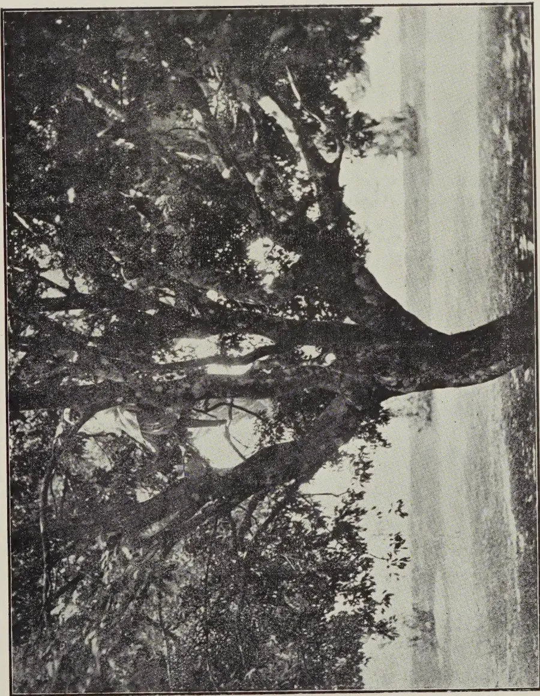
A black and white photograph of a large Litchi tree. The tree has a thick, gnarled trunk that curves slightly to the right. Its canopy is very wide and open, with many branches reaching out, creating a large area of open sky above it. The background is a bright, hazy landscape, possibly a field or a body of water, under a pale sky. The overall composition emphasizes the tree's size and its ability to provide shade and light.Plate 1.
Large Litchi tree showing open centre allowing of ample circulation of light and air.
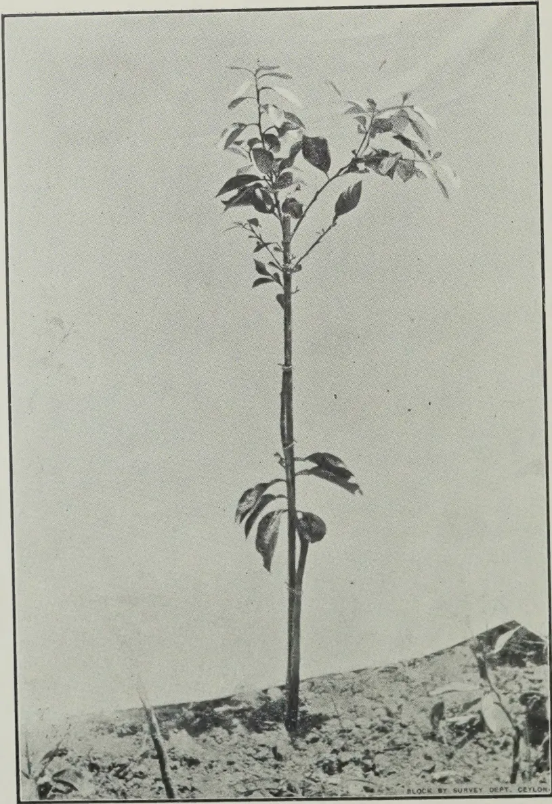
A black and white photograph of a young, slender citrus plant, likely a citrus tree, standing in a nursery bed. The plant has a single, straight, thin trunk with several small, dark, oval-shaped leaves. The leaves are clustered at the top and along the sides of the trunk. The plant is supported by a thin, vertical stake. The ground is covered with small, light-colored stones or gravel. The sky is clear and light-colored. In the bottom right corner of the photograph, there is a small text: "BLOCK BY SURVEY DEPT. CEYLON."Plate 2.
A young budded Citrus in nursery bed before heading.
5In the former instance the liberal supply of nitrogen causes vigorous leafy growth and as long as this continues little or no fruit is produced. In such cases a cessation of manuring should encourage fruitfulness or failing that a pruning of the roots to so reduce the nitrogen supply as to secure a balance between nitrogen supply and the amount of carbohydrates manufactured by the leaves.
In the latter instance, the sick or starved tree, the indication is that it has exhausted the nitrogen supply in the soil and is therefore suffering from nitrogen starvation which effects both growth and fruitfulness. In this case a pruning out of all sick growths and a general shortening back of the remaining shoots should be undertaken together with a forking up of the soil around the tree and application of a heavy dressing of manure. The nitrogenous substances in the manure will in a short time induce young and healthy growth and this in its turn will increase the carbohydrate supply, the tree thereby returning to, or attaining, a fruitful condition.
The fruit growers' aim is primarily the production of fruit buds in his trees or shrubs, he also requires a definite shape and strength in structure of the plant to bear and support such fruit, and all this is attained by a correct method of pruning. The tea planter prunes his bushes for the production of the maximum leaf crop combined with the health of the bush and accessibility to the leaf crop, and the collar pruning of tea can be instanced as probably the most drastic form of pruning it is possible to apply to any tree or shrub. Even the rubber tree is not always immune from pruning as a low branched tree must be rectified to form a clean straight stem for tapping purposes. Plantation cocoa requires periodical thinning rather than any established method of pruning, the object here being the admittance of light to a certain degree and the circulation of air to the centre of the tree. With coffee the same principles apply, but both in the young stage, by topping at the required height, and in the older stages of growth pruning has to be adopted to ensure and maintain a suitably shaped head, usually in a spreading form and to the convenient height for picking purposes, of approximately five to six feet.
Among purely horticultural subjects the pruning of the garden rose bush is one presenting difficulties to the average gardener, and this will be dealt with in further detail later since
6the rose bush growing in the low-country, requires a different method of pruning to its counterpart in up-country gardens, and both operations vary from the principles adopted in England, which is generally considered the home of the rose. Of the variety of trees used for shade purposes along the roadsides of this and other tropical countries, very few would properly serve this purpose were it not for pruning and shaping.
It will be seen therefore that the operations included under the term "pruning" have a very wide range and it extends even to the pruning or checking of the root growth of some trees.
With fruit trees grown under Ceylon low and mid-country conditions little systematic study concerning these operations have been made, but with Oranges, Grapefruit, Mangoes, Avocado pears and such like, a system is applicable. It must be remembered that these trees are evergreen and as a rule they require little treatment after the framework of the tree has been established. The framework is the main consideration and having attained this a thinning to allow air and sunlight to reach the inside foliage and branches is generally all that is required. Often, however, if the tree is not watched, strong overlapping branches are formed and if allowed to remain these unbalance the tree and from the fruit production aspect are a drawback. It is essential then to keep such branches cut back in the young growing stages otherwise if these thick growths develop and are later removed in an incorrect manner, a crop of vigorous shoots results, and the last stage is worse than the first. The correct way to prune such branches is to cut back parallel with the trunk or the main branches or laterals of the trees, and in no case must snags be left as it is here the twiggy shoots from adventitious buds develop, and a clean close cut will invariably heal well.
A suitable framework for the tree is attained in the early years. The best fruits at the present time are from budded or grafted plants and to form a good shaped orange or grapefruit tree the pruning necessary for the formation of a good head should be done at the time of planting or soon after the young plant has survived its transfer from the nursery to its permanent position. A standard habit should be encouraged and all low side shoots should be cut off at time of planting. As the terminal shoot that is left attains a height of 3 feet or so it should be cut back to 2 feet from the ground. The topping will result in several shoots being thrown out, and four or five of the
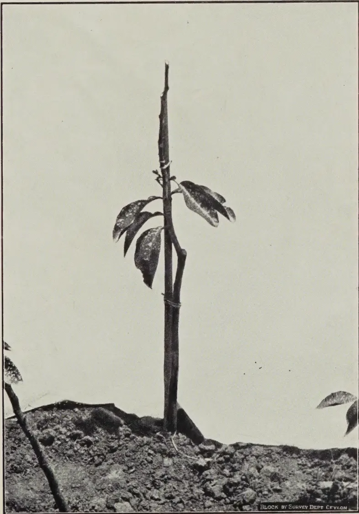
A black and white photograph of a young citrus plant in a nursery bed. The plant has a tall, straight stem with several large, dark leaves. The ground is rocky and uneven. A small label at the bottom right of the image reads "BLOCK BY SURVEY DEPT CEYLON".Plate 3.
A young budded Citrus in nursery bed after heading.
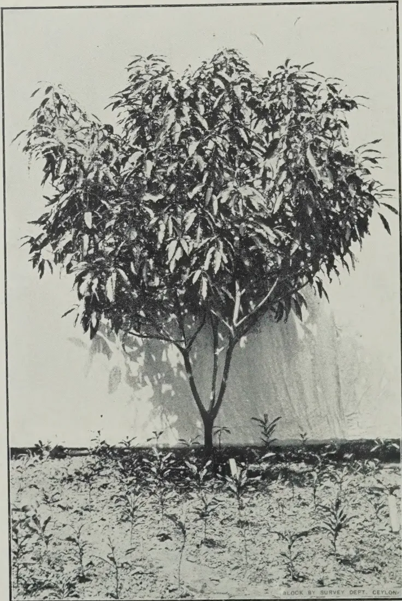
A black and white photograph of a two-year-old grafted mango tree. The tree has a dense, rounded canopy of leaves, characteristic of a 'head formation' in horticulture. It is planted in a field, with several smaller, younger plants visible in the foreground. The background is a plain, light-colored wall or screen. The entire photograph is enclosed in a thin black rectangular border. In the bottom right corner of the image, within the border, the text 'BLOCK BY SURVEY DEPT. CEYLON.' is printed in small, capital letters.Plate 4.
A two year old grafted mango showing head formation.
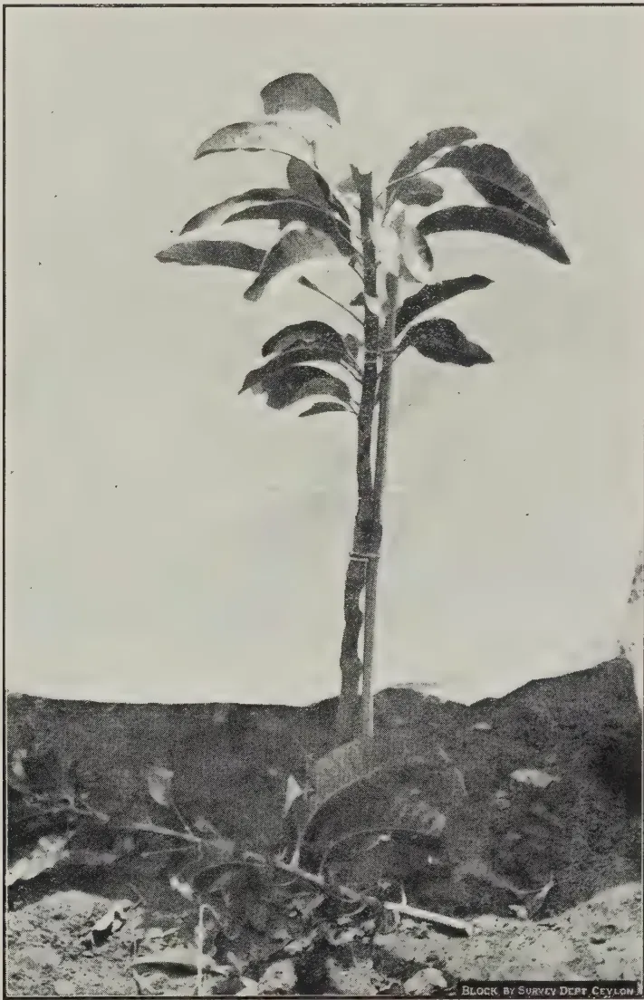
A black and white photograph of a young grafted mango tree in a nursery bed. The tree has a single main stem with several large, dark, ovate leaves. A small branch is visible at the base of the trunk. The ground is dark and uneven, with some loose soil and debris. The background is a plain, light-colored wall or sky. In the bottom right corner of the image, there is a small text label: 'BLOCK BY SURVEY DEPT. CEYLON'.Plate 5.
A young grafted mango in nursery bed after heading.
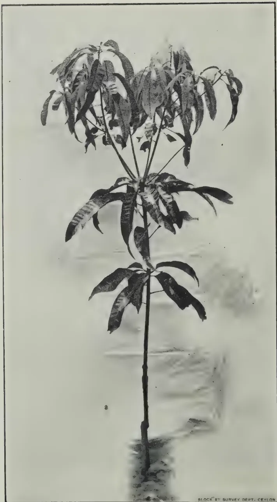
A black and white photograph of a young grafted mango plant in a nursery bed. The plant has a single, straight, slender trunk with several large, dark, lanceolate leaves branching out from the top and middle. The background is a light, textured surface, possibly soil or a nursery bed. The image is framed by a thin black border.BLOCK BY SURVEY DEPT. CEYLON
Plate 6.
A young grafted mango in nursery bed before heading.
7strongest of these should be selected and the rest removed, care being taken as to placement around the main stem of the shoots left to grow. The shoots, as they grow, form the framework of the tree and should be left to strengthen and develop and all assistance given them by good cultivation.
Oranges and grapefruit treated in this way invariably balance themselves as they develop, but the grower will sometimes find that numerous short shoots will later develop from adventitious buds on the main stem and branches, these sometimes being observed from the base to the top of the tree. Those that develop from the main stem, and particularly those below the junction of stock and scion, should obviously be watched for and removed at once but those arising from the branches forming the head of the tree may be left for a time, as although they rarely produce fruit buds they do in fact assist the tree to develop. These shoots along the branches should however be removed in the second or third season when the diameter of the main branches have increased and a good head has been formed. Other difficulties arise when the trees form thick sucker-like shoots, often termed water shoots, and a not uncommon occurrence in our damp climate. Unless one or two of these are required to fill in the head of the tree they should be cut back close to the lateral branch from which they arise, again leaving no snags to give rise to adventitious shoots, or otherwise these interfere with the development of the permanent branches.
The framework for the mango and such fruits which are stronger growers than citrus call for the same principles of heading but this can be done at a greater height from the ground, usually at from three to four feet instead of two feet as in citrus. Having formed the framework of the tree, good cultivation should be afforded to induce vigorous and rapid growth up to its third or fourth year and the maturing of any fruit that may form during this period is not to be recommended. Having attained this age different measures are called for to induce fruit bud formation and development, and it is here that pruning and thinning out of branches that have tended to become thick and matted is called for, assisted by the withholding of water if possible to some degree and by a lesser amount of manuring, as otherwise these stimulants will naturally result in a continuation of vigorous foliage and growth at the expense of the fruit crop.
8Many fruit trees call for a purely upright standard habit instead of the round head and controlled main stem heights indicated above. Such fruits as the Avocado pear, Sapodilla and Mangosteen are examples where the tree can be allowed to develop its natural shape, and where every advantage is obtained by maintaining such. All these have an upright symmetrical habit of growth but Avocados sometimes show a tendency, mostly with seedlings however for the plant to shoot up and not spread as it should. The remedy is to cut back the terminal shoot to encourage a more branching habit. Little or no pruning beyond occasional thinning and removal of dead wood is called for and the same applies to such fruits as the Durian, Rambutan, Soursop and Custard Apple. The Cherimoyer naturally forms a small tree 15 feet or more in height and generally with a well shaped round head on a standard stem but often under good cultivation this tree will produce thick shoots from the main stem and base of branches, not unlike water shoots of citrus, and these where they occur should be cut out flush with the stem or branch and the scars tarred over.
Up-country fruit trees present considerable difficulties in formulating any pruning system as conditions are so variable, and each group and often individual trees of the group, must be treated on their own merits. The mode of growth of good varieties of imported Apples, Pears, Peaches and Plums where they are attempted in Ceylon reminds one very forcibly that they are out of their proper environment, and very rarely can a fine well shaped head be found owing to the poor and stunted growth, the trees usually forming only a few leaders and no lateral shoots at all.
Until some growth is made the question of pruning does not properly arise, and this incompatibility of the imported grafted plant to Ceylon conditions can no doubt be remedied by a change of stock.
The common up-country cooking pear and peach, to quote two examples only, are now well acclimatised to up-country conditions and soil and should be hard to beat for use as stocks on which to bud material of imported varieties. Until something better than the present material is available on which to experiment, any recommendation on pruning such would be little more than guesswork.
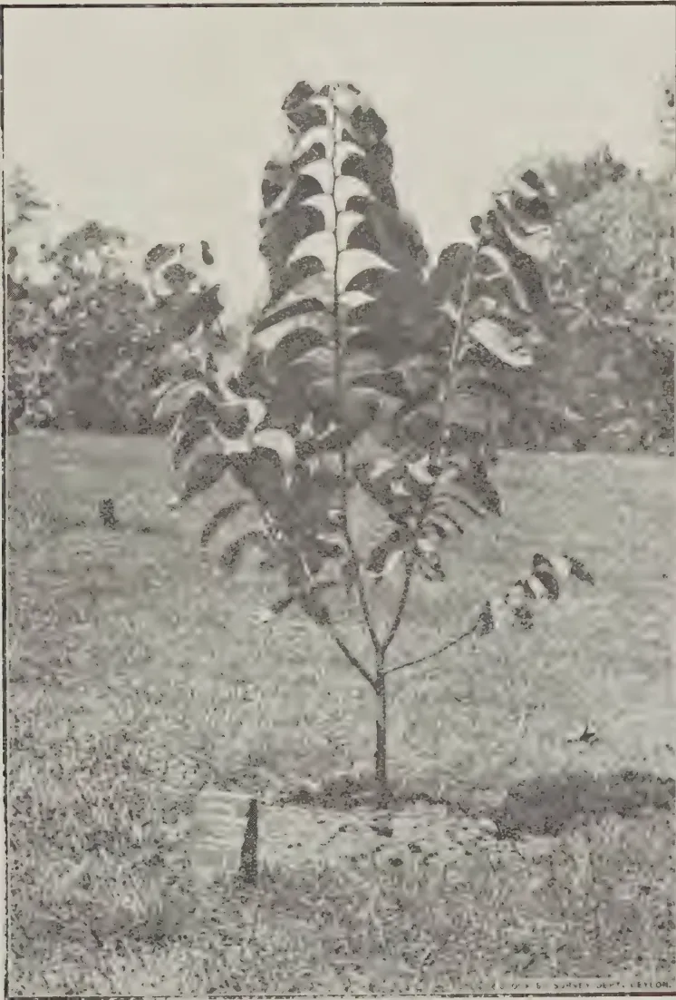
A black and white photograph of a young tree with large, deeply lobed leaves, identified as a well-balanced 'Hama' on 'Soursop'. The tree is planted in a field with grass and other vegetation in the background. The image is framed by a thin black border. At the bottom right of the image, there is a small, faint inscription: 'C. J. S. SURVEY DEPT. Ceylon.'Plate 7.
A well-balanced "Hama" on "Soursop".
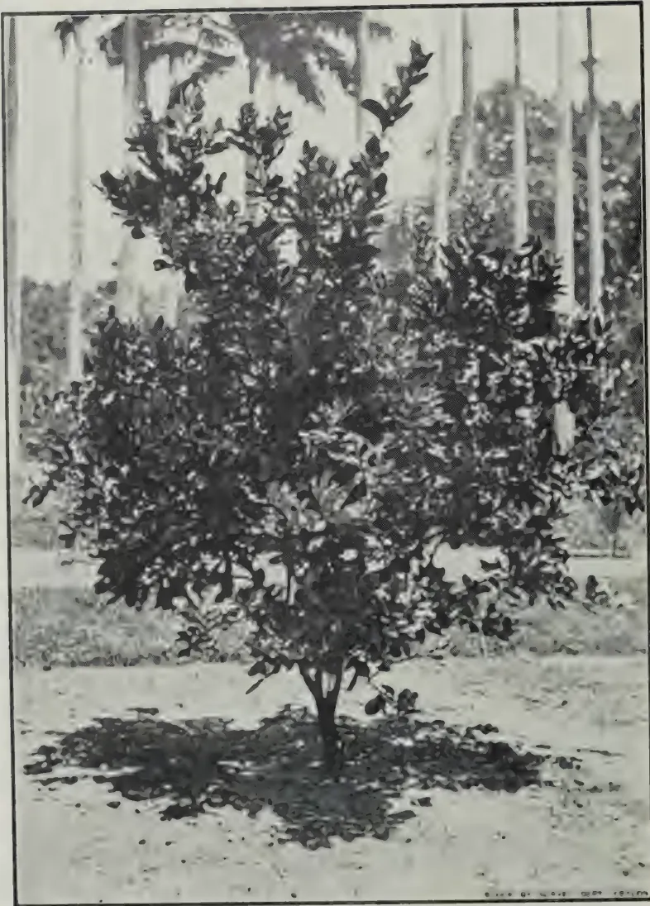
A black and white photograph of a young grafted grapefruit tree in a greenhouse. The tree is bushy with many leaves and is positioned in the center of the frame. The background shows the vertical supports of the greenhouse structure.Plate 8.
A young grafted grapefruit before thinning.
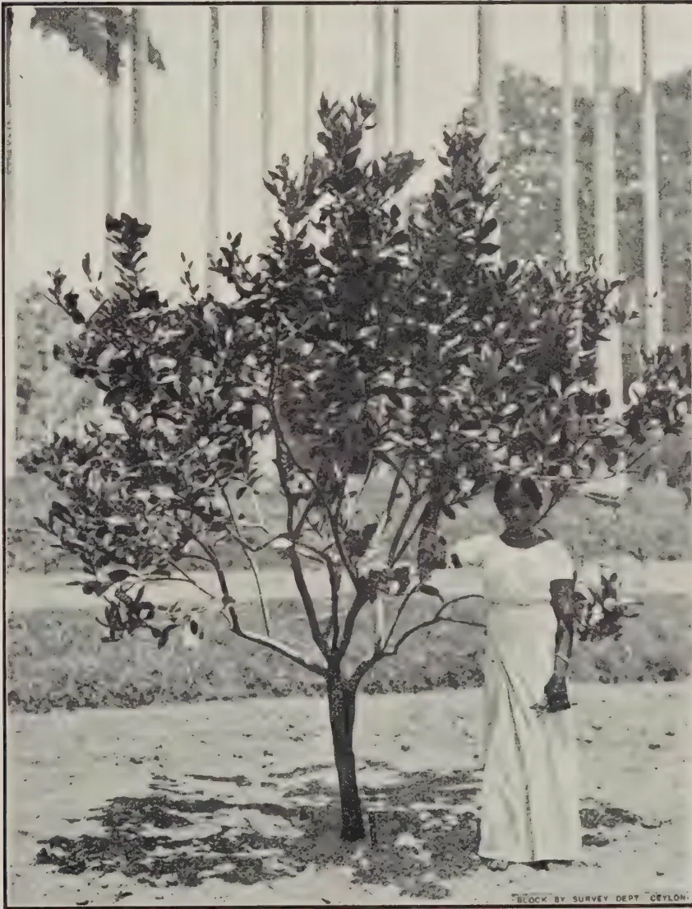
A black and white photograph of a young grafted grapefruit tree after thinning. The tree is a small, bushy shrub with many branches and leaves. A person, likely a woman, is standing next to the tree, wearing a light-colored dress. The background shows a field with other trees and a fence. The photograph is framed by a thin black border. At the bottom right of the image, there is a small text: "BLOCK BY SURVEY DEPT. CEYLON."Plate 9.
A young grafted grapefruit after thinning.
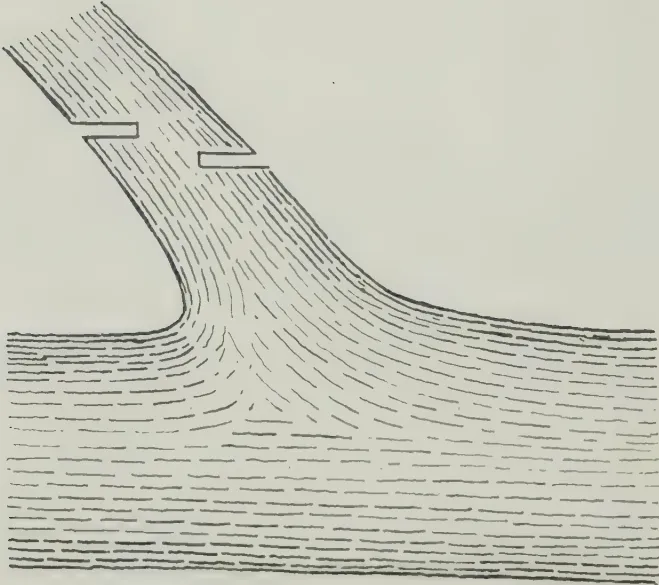
1
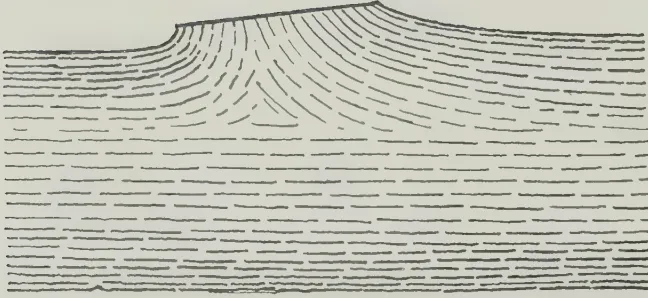
2
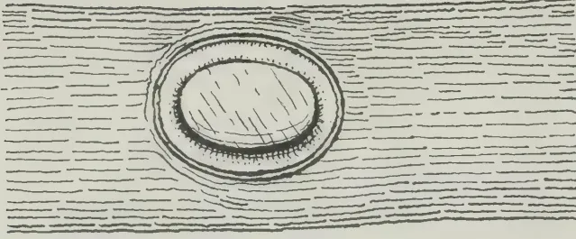
3
Plate 10.
The correct method of pruning large branches.
In dealing with roses, it should be recognised that the best results are obtained in up-country districts, but some success does attend their cultivation in the low-country if "Tea" or "Hybrid Tea" varieties are grown and these on their own roots, i.e., propagated by cuttings. The total absence of a resting period and resultant perpetual growth calls for regular and frequent pruning, or more correctly cutting back. In low and mid-country the object is to eliminate the older wood in conjunction with the encouragement of strong new growth. Reference was made earlier to the drastic collar or clean pruning of tea at low elevations where the bush is cut low and deprived of all growing shoots with a resultant loss of some of the bushes accordingly. A more modified form of pruning, termed "Rim lung" pruning (see Tea Quarterly Vol. VII, Part 1), is now being experimented with, whereby two or three of the stems with a reasonable amount of leaf is left at time of pruning to enable the bush to continue the manufacture of food supplies, and the result is a great reduction in losses as a result of pruning. Deficiency of starch — the storage material — in the roots of a plant which is in perpetual growth is chiefly the explanation of non-recovery after any heavy pruning, and it applies not only to tea but to a host of other plants also and particularly to the garden rose.
Bearing this in mind, no rose bush in the low and mid-country should be pruned so low as is usually advocated in books on rose culture for temperate climates, though the latter can be applied in a more moderate form up-country. As a general rule the removal of all worn out shoots, any dead wood or thin spindly growths after flowering and when the bush is usually in the stage of minimum growth is all that is called for. Roses flower on the new wood, and flushes of new wood occur three or four times a year, so that frequent attention in shortening is called for. In passing it should be mentioned that the soil should be forked up and manured after such operation.
A very important part of pruning is to know the characteristics of the plant you are dealing with, for each has its peculiarities and all trees do not fruit in the same way. A method of pruning beneficial to one type of tree may be most harmful to another type, and the operator may be cutting out too much, or too little wood. The apple tree for example produces short stubby fruit spurs which produce fruit over a number of years
10with consequent little wood growth and these spurs must be preserved at all costs. On the other hand a peach tree bears its fruits on the wood of the previous season's growth so that a regular supply of new wood should be produced each year to maintain crops. Citrus trees bear fruit in clusters in the axil of the leaves or in small lateral or terminal cymes or panicles as can be seen very clearly in the mandarin, so that as before stated it is wise to prune very lightly or not at all, an occasional thinning of thick growth only being required.
Summing up therefore it can be definitely stated that the principles of pruning in the tropics remain the same as for subtropic and temperate plants but owing to the absence of a definite resting period and the consequent evergreen state of the plant the practice of pruning is effected thereby and a lighter form, more properly termed thinning, is generally the best. A sick tree will often call for a heavy or hard pruning to effect recovery, and so will the healthy tree that is making far too much head growth at the expense of the lateral branches and particularly if this is a fruit tree. But beyond such instances, and in the pruning necessary in the young days to form the plant framework, only periodical thinning by the removal of the weak, sickly or dead portions of wood is required, thus maintaining plenty of light and air to all parts of the tree. Generally speaking therefore pruning (or thinning) attains the following objects.
(a) By checking or modifying the vigour of the plant more fruit and less wood bearing shoots are formed.
(b) The continuity of yield is maintained together with a maintenance of the quality of fruit.
(c) The maintenance of the tree in a healthy condition and to keep it within manageable shape and limits.
The best time to prune any tree or shrub in the tropics is generally at the period when it is in a minimum state of growth. This occurs usually just after the flowering and fruiting periods or just prior to the flush of new growth. The former is preferable, but should either period coincide with periods of severe drought it is wise to postpone the operation as otherwise sun scorching and exceptionally dry winds can cause considerable damage to the plant so treated and may crack the wounds.
11The operation of pruning necessitates the use of a sharp knife and saw, and emphasis must be made on the use of sharp implements alone or much damage will be caused to the tree. Where shoots are shortened the cut should always be made just above a bud, and in a slanting direction. Where it is necessary to cut out the whole shoot or branch this must be cut close in and flush with the branch or stem from which it arises leaving no snags from which adventitious or dormant buds would arise. In cutting out branches of one to two inches in diameter these too should be cut back close to the stem; preferably with a pruning saw and these finished off with a sharp pruning knife leaving a smooth surface to the cut. In the removal of really large branches, the cut should be made with a saw, from the underside first for a quarter or so of the diameter of branch, and then from the upper side, a few inches forward of the under cut. The stub is then sawn off close and the surface planed over. This will prevent the splitting of the wound or the tearing away of the bark by the weight of the branch that is being removed. Where large branches are thus removed they should readily heal if cut in close to the stem or laterals and the surface left smooth. This healing is effected by means of a callus which forms from the growing tissues between bark and wood. To avoid infection pending the callusing over of the wound it is necessary to treat the surface of the wound with a good dressing of the best local tar. The application does not actually hasten the healing process but it arrests decay and preserves the surface till such time as a complete callus over the wound is formed.
Root pruning is another method applicable to trees both in the tropics and elsewhere. In more temperate regions it is employed mostly to confine the roots of a tree so that they do not interfere with other neighbouring plants, but in the tropics the method is more generally in use and for the purpose mainly of a check to the tree's exuberance of growth. Root pruning checks growth by cutting off part of the food supply and with an over vigorous tree, a check to growth will often induce fruitfulness.
12A trench is cut and excavated around the tree at a distance from the main stem according to the size and age of the tree, varying from 3 feet for a small tree to 10 feet or so for a very large tree. The trench should be three to four feet deep and one to one-and-a-half feet in width. As the roots are unearthed in the trench excavation they should be cut back with a very sharp knife and finished off as for branch pruning. It is possible also to carefully undermine and sever the tap root should such be suspected of entering the subsoil to the disadvantage of the tree. The trench should be left open for a few weeks, after which it should be refilled with the excavated soil to which well rotted cattle manure or other humus should be mixed at the time of refilling. This method of pruning is more applicable to individual specimen fruit and flowering trees and is not generally employed outside small gardens.
All good cultivation should aim at encouraging a fibrous root system and the prevention if possible of strong woody roots into the sub-soil.
This image is a scan of a blank page. The paper has a light beige or cream-colored tint. There are some very faint, blurry marks and artifacts scattered across the surface, which appear to be scanning noise or imperfections in the paper itself. No text, lines, or other graphical elements are present.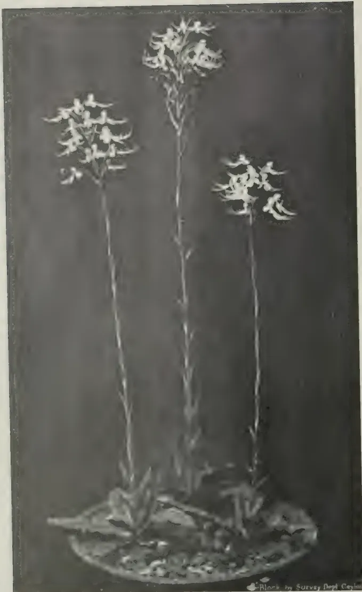
A detailed botanical illustration of the orchid Habenaria crinifera. The drawing features three upright, slender flower stalks. Each stalk terminates in a dense, rounded cluster of small, light-colored flowers. The flowers have a characteristic shape with a central lip. At the base of the stalks, there is a small group of broad, lanceolate leaves. The entire plant is shown growing from a small, textured patch of ground. The illustration is rendered in a fine-line style, typical of 19th-century botanical prints.Plants by Survey Dept. Cayman
Habenaria crinifera Lindl.
13K. J. ALEX. SYLVA, F.R.H.S.,
CURATOR, HENERATGODA BOTANIC GARDENS, GAMPAHA
HABENARIA is a fairly well-known and an extensive genus of the Ophrydeae tribe of orchids, embracing about four hundred species, well distributed in many parts of the world and consequently thriving in various climes and altitudes. All Habenarias are tuberous-rooted terrestrials. Though a large percentage of the species is interesting to the botanist only, there are several that should appeal generally by virtue of their handsomely rosetted foliage or their weird and curious flowers often resembling insects.
Habenaria crinifera Lindl., the subject of our brief notes this month, is one of our rather rare indigenous ground-orchids, familiar to the herbalist as "Aha-ha-se-makuluwa" (airy spider). It grows sparingly in the moist parts of the Island from almost sea level up to about three thousand feet.
The plant has a very short stem, rarely exceeding three inches, with a whorl of oblong-lanceolate bright green leaves about four inches long by one-and-a-quarter broad and flowers in February and September. The flower-scape rises from the centre of the plant to a height of about twelve or eighteen inches and produces a cluster of a score or more of queer-looking white flowers. Scale-leaves are borne at the nodes of the scape. The individual flower is about one-and-a-half inches in length and half-an-inch in breadth. The thin deeply cleft lip is the most distinctive feature of the flower, — being about three times as long as the other members. This lip with the outstretched sepals, the long and erect petals and the short column give the flower a pantomimic effect, well meriting its popular English name of "The Dancing Girl Orchid".
Culture.—As soon as the flowers begin to fade away the scape should be cut off from just above the whorl of leaves for if the pods are allowed to form and develop the plant will be
14weakened and if it is already an unhealthy plant it may succumb altogether. After this the plant may be rested in dry, cool conditions for several weeks, only sufficient water being given to assist the ripening of the tubers now appearing at the root-tips. From eight to twelve weeks after flowering the plant may be removed from its old soil and the tubers separated and potted singly or in one large pot in fresh compost. The plant thrives in a sandy loam rich in humus. A mixture of one part of well-decayed leaf mould, with half as much of well-sifted red earth or turf soil, and a sprinkling of sand and cattle manure makes a fine compost for most Habenarias.
After placing the usual drainage material at the bottom, fill the pot to its brim with the compost and bury the tubers about half-an-inch below the surface. When the young plants appear in due course, a layer of crocks should be placed over the soil for the foliage to rest on and to keep it clean and fresh.
The plant responds readily to stimulation by the application of liquid manure during active growth and weak doses may be given advantageously just as the plant is beginning to form its flower-scape.
15THERE is an increasing demand for insecticidal plants. Especially those containing the substance known as rotenone. Rotenone extracts are at present almost exclusively obtained from species of Derris plants belonging to the Natural order Leguminosae. The two chief varieties of commerce are Derris elliptica and Malaccensis. The latter is easier to cultivate than the former and can yield as high ether extract contents, but elliptica is preferred for its higher rotenone content. The two varieties only are referred to hereafter.
Derris is best grown for commercial purposes in a climate with from 90 to 130 inches of rain per annum, evenly spaced over the year in periods of several days, alternating with several days' sunshine. This allows the most economical estate routine. It requires a temperature of 80°F. or over, and a humidity figure of 80 to 90. Given the latter it tolerates any amount of direct sunlight.
Derris requires a steady supply of moisture, but will not flourish in swampy ground. Stony soil and steep gradients are not favourable to its growth. It will flourish in heavy clay, but tends to produce coarse roots and cultivation is expensive. Heavy wet loams appear to encourage top growth but to give a poor toxic content. Derris will flourish in sandy soils over less permeable soils, which will give a high water table and prevent leaching. Such soils are easy to work and are frequently selected by Chinese growers. The most suitable soil is probably a rich friable loam.
Insufficient evidence is yet available regarding the relation of toxic content to soil type, either mechanical or chemical, and this aspect requires investigation. Derris elliptica will produce up to 25 per cent. ether extract and 10 per cent. rotenone content at two years old.
Derris is propagated by hard wood cuttings: propagation by green wood cuttings and by root cuttings has not been found successful on a field scale. Yields are improved by selective
16cultivation of strains. Owing to the fact that cultivated varieties of Derris do not flower within the period of cropping, propagation by seed is not possible. Cuttings seven inches long are taken from the branch stems at harvesting, planted directly into the field 4 inches deep, and heeled in. They should strike in four weeks. Failures are higher in the case of elliptica than of Malaccensis, and resupply within two months of up to 15 per cent. may be necessary. The crop of mature Derris at harvesting should provide sufficient cuttings for planting up to three times the acreage on which it is grown.
The roots are usually harvested at two years. Up to twelve months the crop must be regularly clean weeded, as often as the weeds begin to submerge the leaf growth. In the earlier stages disturbance, and exposure to sunlight, of surface soil between the rows should be kept to the minimum possible, and deep weeding avoided.
The active principle of Derris is contained in the root, the content of the stump being small, and that of the stem and leaves negligible.
Ridging up before planting is to be avoided, as the frequent weeding, required by this crop, levels out the ridges and exposes the surface roots.
Derris appears to respond well to liming, and the giving of phosphates in the early stages encourages a branching root formation. The value of manuring generally requires investigation, and in particular its effect upon the ultimate yield of active principles.
A spacing of two feet by two feet appears to be the most satisfactory.
Upon harvesting, the roots should be kiln dried to a moisture content of 10 per cent. or under, and baled under pressure in bales of 2 to 3 cwt. measuring approximately 18 inches by 24 inches by 48 inches.
The yield of kiln dried root per acre attainable is about 1,000 lb. This is for Derris planted as sole crop. When it is planted with young rubber and other crops, the acreage occupied by the trees and the growing space kept clear round the trees must, of course be subtracted.
17Derris, properly cultivated under efficient management, does not suffer noticeably from fungus or insect attacks in the field. There are many records in the literature of insects (varying from red spider to boring beetles) attacking Derris. Roots have on more than one occasion been received in England seriously infested with a boring beetle; on one occasion the beetle was definitely identified as belonging to the Sinoxylon genus, and infestation had occurred in the country of origin. In large experience, however, incidence of insect attack is casual and not of a regularly recurrent nature. Thus, crops which had been permitted to become overgrown with weeds suffered from leaf-eating insects which were attacking the weeds. On the crop being clean weeded, however, no further damage occurred. In the same way, root harvested and baled and shipped home within a reasonable period, has never suffered by beetle infestation, but it has been found that root which has been stored in godowns and rubber smoke houses in Malaya, mostly for periods of one or two years, has become badly infested with root-boring beetles.—[Supplied by R. S. Cahn of the Cooper Technical Bureau.]
18THE system of agricultural credit in Italy is the result of a long process which has passed through a number of experimental phases. From the very beginnings of the Kingdom of Italy, the necessity has been recognised of furthering the development of this special form of assistance to agriculture. The first law dealing with the subject was that of 21 June, 1869, No. 560, which empowered the Government to authorise the formation of institutions for the carrying on of agricultural credit operations and empowered these institutions to issue as representing the operations effected, bearer bonds designated as bouni agrari. These bonds however which were payable at sight were not well adapted for supplying funds for any other than short term operations, and in consequence the results obtained from the legislation were small. Attention was thereupon directed on other methods with a view to making some considerable portion of the national savings available for agriculture; and it appeared that the best means of securing this object would be to introduce into agricultural credit operations strict forms of real guarantee. This was the principle on which was based the Law of 23 January, 1887, No. 4276, which abrogated that of 1869 and authorised agricultural credit operations to be carried on both by all ordinary and co-operative credit institutions and by the savings banks. These institutions were given power to raise the necessary funds by means of the issue of agricultural bonds, a power which however has never been exercised. Subsequently a number of other measures were adopted in succession, for the most part of a regional character. As a consequence of this somewhat loosely knit and fragmentary legislation, a certain disproportion was noticeable in the working of agricultural credit in the various regions and provinces, some of which derived no advantages from the special measures.
At the moment when the National Government put forward a wide programme for the general reinvigoration of agriculture after the effects of the war and the post-war crisis, the state of affairs was as described and the reform of the legislation on agricultural credit appeared to be a matter of urgency. This was accordingly carried out by means of the Royal Decree-Law of 29 July, 1927, No. 1509, converted into law on 5 July, 1928, No. 1760.
Provision was thus made for creating, with the object of giving effect to the reform throughout the whole of the national territory, a wide organisation with full technical and financial equipment, based essentially on ten regional institutions and a National Consortium, with functions shortly to be described.
* By G. Costanzo. Extracted from the International Review of Agriculture, Year XXV, No. 10, October, 1934.
19It may be stated in advance that the practice of agricultural credit in Italy has gradually come to conform to the following principles :
(1) credits are granted not merely to the landowner as such, but to whoever directs the working of agricultural land, in other words to those actually carrying on farming ;
(2) in particular facilities are granted to operations supported by forms of real guarantee (liens with right of priority, pledges, mortgages), not excluding operations on personal security ;
(3) there is a tendency to adjust with increasing rigour the total of the loans to the actual requirements of the farms ;
(4) the land for which the loans are made must be precisely defined ;
(5) the objects for which the loans are made must be stated in advance and subsequently checked ; in other words care must be taken to maintain a check on the use to which the sums advanced are put, so that there may be a full assurance that these sums are being effectively utilised for the purposes of production ;
(6) the agriculturist is considered in the two-fold aspect of the individual in isolation and the individual in association with others for the better satisfaction of common economic needs or the better performance of certain types of work.
Agricultural credit operations are of two kinds : credits for current cultivation needs and those for improvements.
Credit for current cultivation needs include : (1) loans for farming in general and for the utilisation, manipulation and transformation of the products ; (2) loans for the purchase of live-stock, farm machines and farm implements ; (3) advances on pledge of agricultural products deposited in places of public or private store ; (4) loans in favour of agricultural organisations and associations : (a) loans for the purchase of requirements for members' farms ; (b) advances to members in the case of utilisation, transformation and joint sale of their products.
Loans and advances coming under headings (1), (2) and (3) may be made either to individuals, or to organisations and associations directly farming lands under a legitimate title or under an agreement of any kind.
Loans for current cultivation needs may be made in kind as in cash, but in view of the necessity of ensuring that these are actually applied to agricultural purposes, it is prescribed that preference be given to advances in kind whenever the purpose of the advance makes this possible.
Loans for general farming and for the purchase of live-stock, farm machines and farm implements, must be kept within the limits of the actual requirements of the farms ; this proviso being dictated by the consideration that the facilities and guarantees specified by the law are intended only to assist operations undertaken in the strict interests of agricultural production. Loans for the purpose or maintenance of live-stock in excess of the normal requirements of the farm, in cases where animal husbandry is
20carried on whether in view of the live-stock products, or in the form of breeding or rearing stock, may be granted within the limits in which the industry represents a rational complement to ordinary farming, or when the land cannot be utilised except for pasture.
The manipulation, transformation and utilisation of the products may form the object of loans for current cultivation needs, in so far as they represent a subsidiary and complementary activity of a farm, and do not constitute an independent industrial activity. The advantages of loans for these purposes are extended also to organisations and associations undertaking the manipulation, transformation and utilisation on a joint basis of the products coming from members' farms.
Advances on pledge of agricultural products deposited in places of public or private store are granted exclusively in favour of the growers in the event of a delayed sale or failure to sell the products; these advances must not exceed three-fifths of the current value of the deposited goods and must be reduced or extinguished even before the due date, if the goods have been either partially or wholly withdrawn from store, or have suffered deterioration of any kind.
The second category of operations is that of loans for the permanent improvement of farms. The following are the purposes indicated of such advances:
The loans and advances here indicated may be made not only to individuals, organisations and associations which own or farm lands in virtue of a title which permits the execution of works of such a kind, the assumption of the obligation involved in the loan with provision of the required guarantees, but also to improvement and irrigation consortia and the like which undertake the carrying out of agricultural improvement and reclamation works in the interest of the members.
The following are considered as being operations of agricultural improvement credit:
21(1) Purchase of plots for the formation of small farm holdings; by this is to be understood property forming a holding complete in itself but not exceeding the total area which can be normally cultivated by the family of the owner while not less than the minimum area required for the proper conduct of a family undertaking. Loans for the purchase of land for small-holdings may be granted to organisations or associations as well as to individuals; those to individuals are subject to ascertainment of the technical qualifications of the applicant and to the general conditions being such as to ensure that purchase and management of the holding in question are not being based solely and essentially on the credit applied for. Loans to organisations and associations — preferably taking the form of co-operative societies among the persons concerned — which purchase farm lands for the purpose of distribution among direct cultivators so as to establish small cultivating ownership, are granted subject to the submission of a comprehensive scheme for re-parcelling and consolidation of the lands, such schemes to be adapted to local conditions. Grants of loans in either of the cases mentioned are not to exceed two-thirds of the value of the lands, as estimated for purposes of security.
(2) Purchase of lands, payment of rents and other charges due and conversion of any mortgages incurred for the purpose of permanent improvement of the farm lands.
(3) Construction and adaptation of buildings for joint use in storage and distribution of farm requisites and farm products, and for housing live-stock; this type of loan may be granted only to organisations or associations legally constituted, consisting of farmers who for the most part are farming their own lands.
In general, to obtain an improvement loan it is essential to present a detailed scheme of the improvements contemplated, with an estimate, also in detail, of the expenditure involved. The loan is granted only subject to the ascertainment of the technical and economic advantage of the operations proposed. Loans are to be made in instalments whenever the nature of the operations and of the work to be done allows a gradual utilisation of the sums loaned.
All loans for current cultivation needs are effected by discounting "agricultural bills of exchange" (Cambiali agrarie); such a bill is, for all legal purposes, equivalent to an ordinary bill of exchange and should indicate the purpose of the loan, the farm land to which it relates or the place of deposit of the products that are to be utilised, transformed or preserved, and finally the guarantees securing the loan.
Improvement loans, on the other hand, are usually granted on the basis of the terms of the relative contract, and on production of mortgage guarantees or other guarantee approved by the lending institution as adequate. When however the nature of the improvements, the sums involved, or the manner of carrying them out make it advisable, these loans
22may also be made by the method of discounting agricultural bills of exchange provided that the time taken by the operation does not exceed five years.
The following rules hold good in respect to the period for which the various loans are granted. Loans for the farming of lands and for the utilisation, manipulation and transformation of the products, fall due respectively at the time of harvest or on the completion of the utilisation or transformation of the products. However, exceptionally, institutions providing agricultural credit may be authorised (Royal Decree 23 October, 1930, No. 1415, converted into law of 29 December, 1930, No. 1787) to extend the period of this type of loan even beyond the time of harvest or the completion of the utilisation or transformation of the product once only and not beyond six months from the due date, when this extension is essential for the protection of the market and of the credit.
Loans for the purchase of live-stock, farm machines or implements are extinguished in annual instalments not exceeding five.
Advances on pledge of farm products fall due at the time when the sale of the products can be effected without loss to the producers.
A period of not more than six months is fixed for loans to agricultural associations for the purchase of farm requisites for members' farms or for advances to members in the case of joint utilisation, transformation and sale of their products; on expiry, however, of this period the loans may be taken up, wholly or in part, by means of bills of exchange released by the individual members.
As regards the duration of improvement credit, the loans made in the form of bills of exchange must, without exception be extinguished within five years; but the lending institution is empowered — whenever on account of circumstances as indicated above the extinction of the obligation resulting from the bill of exchange within the period assigned would be impossible or too burdensome for the borrower—to agree to the credit operation itself being transformed into a loan, the terms of the relative contract being first agreed. The amount of such mortgage loans cannot exceed 60 per cent. of the sum corresponding to the value of the loan, as estimated for purposes of security before the initiation of the improvements, increased by the value of improvements; they are repayable within a maximum period of thirty years, by means of the system of amortisation with half-yearly payments, inclusive of capital, interest and subsidiary charges. The date for commencement of the amortisation may be fixed also for the period succeeding that of the last instalment of the loan payment, i.e., at the period when the improvements become remunerative, but in any case may not be fixed for a date later than five years from such payment.
Special interest attaches to the provisions in regard to guarantees, the general principles of which may be indicated as follows:
23(1) Loans intended to meet the expenses of the ordinary management of the farm (expenditure for seeds, fertilisers, spraying materials, etc., lubricating and fuel oils, preparation of the land, harvesting, labour, rent, transport, etc.) are guaranteed on the products of the Agricultural year. The provisions of the law are in fact that such loans are made against a prior right to levy distress on growing crops and on crops harvested, and on produce derived from the farm stored in the dwelling houses or buildings annexed to the farms. This right is a preferential claim, or lien, secured by law to the lending institutions, against whoever occupies, manages, or cultivates the farm within the year in which the loan, or any single instalment of the loan, may fall due; in the event of crop failure, either total or partial, this right is transferred to the crops of the succeeding year, provided that the borrower continues to farm the land. This claim itself has priority over every other claim, always excepting any claim there may be for legal expenses, so that the liability to the lending institution must be met even before that to the State for taxes or charges, or that of the landlord for the rent, if the land is held under a tenancy agreement. If moreover several associations or other bodies, authorised to carry on credit operations, have granted in respect of one and the same farm in the same agricultural year different loans for various purposes, all relating to the farm expenses, then these associations or other bodies will all enjoy the same priority.
(2) As has been seen, advances may also be made to the farmer for utilisation, handling and transformation of agricultural products. These same loans may equally be granted to organisations and associations which undertake the utilisation, handling and transformation jointly of the products coming from the farms of members. In these cases the prior right to levy distress must be understood as confined to the product thus utilised, handled or transformed.
(3) Advances for the purchase of live-stock, farm machines or implements are subject by law to the same prior right in relation to the stock, machines or equipment, respectively, thus purchased. The credit institution has thus automatically the right described under (1). In the case of the purchase of live-stock the question arises whether this lien is exclusively over the head of stock purchased and is limited to these, or whether it is really applicable to a certain number of animals of the same kind as those purchased. Clearly the second interpretation is the one that must be accepted.
(4) For further guarantee of the loans referred to under (1) and (3), there may also be constituted a special contractual lien on the growing crops and those harvested in the year, over the produce of the farm stored in the farmlands of the debtor, and over any other object used for cultivation or for supply of the farms. The amount of this lien is however limited to the part of the value that is in excess of the credits guaranteed by the statutory lien with right of priority. The special lien must have as basis a written document, it must have received a date in consequence of registration and must be entered at the Conservatoria of mortgages; it must be constituted for the period of the loan which it is intended to
24guarantee, and in any case, for a period not exceeding five years. It may however be renewed before the date of expiry for another period of five years. In no case may the period of this lien exceed the date at which the borrower ceases to farm the land in question.
Although this lien has not such absolute binding force as the statutory lien, it may however serve a very useful purpose in guaranteeing agricultural credit operations, since it is prescribed that, in the event of the sale of the chattels subject to the special lien, delivery cannot be made to the purchaser until the credits due to the lending institution has been paid. Moreover, the seller who has made such delivery without discharging the credits due to the lending institution incurs the penalty (as in the case of the statutory lien) prescribed by Art. 203 of the Italian Penal Code; and the buyer is expected to meet the credits due to the lending institution, but may take proceedings against the seller.
In competition with the holders of mortgages registered before the date of the registration of the special lien, the lending institution cannot obtain precedence over the holders of mortgages, since in this case the precedence of the other creditors with competing claims to priority holds good in accordance with the provisions of the Italian Civil Code.
(5) If the farmer, who has already harvested his crop products or some of them, applies for an advance to be paid off when these products shall have been sold, the specific guarantee which may be constituted is that of the pledge, but in this case it is essential that the products are stored in public or private store places. If the storage is effected in general warehouses, these, in virtue of the special legislation in force in respect of them, are already legally constituted guardians of the pledge, and the issue of certificates of storage and of pledge notes serves to facilitate transfers of merchandise and the credits guaranteed by it. If the storage is effected in private store places, belonging to third persons or to companies, the manager of the warehouses is appointed guardian of the pledge, for which a deed of registration is required.
(6) Loans directly made to agricultural associations or co-operative societies of the capital required for the purchase of goods or machines, distributed afterwards to the farmers, are made under no special guarantee. The said associations or co-operative societies however, when authorised for agricultural credit operations, if they give credit advances in kind, that is to say, if they sell goods and farm machines to their members on credit, may make use of the liens in the manner and within the limits already indicated.
(7) For agricultural improvement credit to private farmers, the special guarantees are of two kinds: the agreed lien, for operations not extending beyond five years, and the mortgage, for improvement operations, whatever their duration.
25The mortgage may be constituted as guarantee of improvement loans granted for not more than five years, but as a rule it is constituted for loans of a longer period.
On the other hand, in the case of loans made in favour of consortia for land reclamation the guarantee is constituted in the following way: the contributions normally payable by the members to the consortia are made payable instead to the lending institution, the payments being recoverable by the same procedure as is in force for the collection of the land tax.
It should be noted that the lending institutions may make good their claim on products and on chattels over which they have an agreed or a statutory lien, even after the products and chattels in question have been removed from the farm, provided they take the necessary action within sixty days of such removal.
26THE food of plants is naturally the first requirement to be considered in connection with plant growth.
Plants are composed of many compounds, these compounds being built up with chemical elements. The following elements are found in plants: Carbon, hydrogen, oxygen, nitrogen, phosphorus, sulphur, calcium, potassium, magnesium, iron, sodium, silicon, manganese. Other elements are found in plants, some of which are now also considered as possibly being essential to plant growth.
Water, in so far as quantity is concerned, is the most important factor in plant production. The amount of water which enters the roots of plants and transpired through the leaves during growth is enormous. The amount will be realised when it is stated that for every pound of dry material manufactured by plant processes, from 300 to 800 lb. of water have been required. Of course, this amount of water represents the water that has circulated continuously through the plant carrying fresh amounts of dissolved food from the soil to meet the needs of the growing plant. In different crops the water required to produce one pound of dry matter varies considerably, thus it is stated wheat requires 500 lb., oats 600 lb., and clover 800 lb. of water to produce 1 lb. of dry plant material. Though the amount of water in the plant at any one time is large compared with other material composing the plant, it is relatively small when compared with the amount of water transpired.
Briefly, we may consider the composition of some crop — paspalum, for example—water, 75 per cent.; organic matter, 22 per cent.; ash, 3 per cent.
Now practically one-half of the organic matter of plants consists of carbon, the rest of the organic matter being composed mostly of oxygen and hydrogen, and a small amount of nitrogen — about 0.4 per cent. The plants by means of the green colouring matter — chlorophyll — in their leaves have the power in sunlight of assimilating the carbon contained in the carbonic acid of the air. The air contains on the average 0.033 per cent., or one hundred of 1 per cent. of carbonic acid gas, and it is certainly very wonderful that about one-half of the dry matter of all green plant growth and coal in the world is the result of the assimilation by chlorophyll mentioned above.
With this brief review of plant composition consideration can be given to means that may be employed to enable plants to obtain the requirements necessary for their most successful growth.
* By E. H. Gurney, Agricultural Chemist in the Queensland Agricultural Journal, Vol. XLII, Part 5, November 1, 1934.
27Plant life is assisted in connection with carbon assimilation in being situated in locations which permit of their receiving suitable exposure to sunlight, and this is one of the reasons that certain situations are more suitable than others, for some crops.
Here it may be mentioned that iron is necessary in plant life as it controls the formation of chlorophyll, and in some cases a deficiency of iron has caused a plant trouble termed "chlorosis." There is usually an abundant supply of iron in most soils, but in some cases where plant chlorosis has occurred owing to iron deficiency, the trouble has been rectified by the application of iron sulphate, either as a spray or to the soil.
Regarding the water requirement of plants, means are available for assisting plant growth in this requirement, and the first measure to be undertaken is to prepare the soil as far as possible into a suitable condition for the reception and retaining of rain. Rain falling upon a soil with its surface in a hard crust-like condition will be unable to penetrate the soil to the extent it would if soil surface was in a friable condition.
Some soils are able to retain the rain falling upon them better than others, and this is due to the fact that soils are composed of variable amounts of different materials. These various soil ingredients have very different power of absorbing and retaining water, thus soils having a high humus content and clayey soils have a much greater capacity of absorbing and retaining water than sandy soils. It has been found that a more or less pure sandy soil will only retain about 25 per cent. of its weight of water, whilst a sand clay may absorb as much as 50 per cent., and a soil with high humus content may absorb 85 per cent. or more.
It is considered that the most successful plant growth is obtained when the water content of the soil ranges from 40 to 50 per cent. of the total water-holding capacity of the soil.
Therefore, plants may be assisted in obtaining their suitable water requirements, first, by improving the condition of soil by converting it into a more open and friable condition by cultivation and liming, and in the second place by increasing the humus content of the soil.
Humus can be added to the soil by the addition of farmyard manure and by ploughing in green manure crops and all vegetable residues. In our climate, with at times long spells of dry weather, the necessity of increasing the humus content of soils for the purpose of retaining the soil moisture as long as possible is gradually becoming recognised, though not to the extent that its importance deserves, but as farmyard manure is not available in large quantity, the ploughing in of green manure crops should be a regular procedure in our cultural system.
It was mentioned that the organic matter of the paspalum contained a certain amount of nitrogen; similarly all plant life contains nitrogen, the percentage of nitrogen being much higher in the younger stages of plant growth than in the matured plant. Some plants contain more nitrogen than others. Thus leguminous crops have a high nitrogen content, and what is of particular importance is that the nitrogen of these crops is
28derived from the air, and thus the growth of a leguminous crop does not lessen the soil's nitrogen content, but increases it. This valuable property of the legumes is due to the fact that the various leguminous crops have different bacteria growing in "symbiosis" with them (symbiosis means the living together of two organisms for their mutual benefit).
The bacteria enter the roots of the plant, which results in the formation of nodules upon the roots, after which the bacteria obtaining energy from plant material converts the nitrogen of the air in the soil into compounds suitable for assimilation by the plant. For this reason legumes are particularly suitable as green manure crops, although other crop growths are valuable for this purpose.
It may again be stated that it is considered that in Queensland one very important means of maintaining the fertility of agricultural fields or garden plots is by the continued application of material capable of forming humus. That this application of humus may not supply all the mineral plant-food requirements is admitted, but humus in the soil assists in rendering more quickly available to plants the mineral plant-food applied by means of fertilisers. That mineral plant-food material is required by plants is shown by the composition of plant growth previously mentioned and is represented by the ash.
For the most successful plant growth there are requirements besides a sufficiency of moisture and plant foods. Some crops, such as clover, peas, cherries, thrive on soils that are not of an acid nature, whereas other crops such as maize have been grown successfully on soils having at least some degree of acidity. Again the different types of soils are more suitable for different plant growth, sandy loams being more suitable for root development of some crops than soils of a more clayey nature.
That crops have not made successful growth does not necessarily mean that some plant food is wanting or is in too small quantities, though this is very frequently assumed, whereas the real reason of poor growth may be that the type of soil is not suitable for the crop sown in it, or that the soil requires proper drainage, or that the soil has not a suitable aspect for the crop in question.
Therefore, in conclusion, it may be said for all crop requirements it is necessary to have all soil conditions such as tilth, available plant food, and soil bacterial population in good condition to satisfy their requirements.
Crops obtain their mineral plant-food requirements from the soil water. Cultivated soils usually contain abundance of plant food for many successive crops, with the possible exception of three or four substances — viz., nitrogen, phosphoric acid, potash, and lime. These substances in a fertile soil are not only present, but supplies are present in a form sufficiently available for the crop's need, whereas an infertile soil may contain the above-mentioned food materials in a form unavailable to crops. Fertilizers and manures are applied to the soil to provide a certain amount of these plant foods to crops.
29Fertilizers, often spoken of as artificial fertilizers, is the name given to what may be termed manufactured materials used for the purpose of supplying plant food to crops, and the term manure is more used in reference to such material as farmyard manure, guanos, and bulky organic material, which manures, it may be mentioned, improve the physical and biological conditions of the soils as well as supplying plant food.
Soils become depleted of some portion of their plant food by incorrect systems of cultivation; the supply of some particular plant food is exhausted before others. What particular plant food is required to be supplemented with application of fertilizer can be determined by experimental plots with crop it is intended to grow. Different crops require varying proportions of the different plant foods, some requiring larger amounts of nitrogen, others demand more phosphoric acid or potash.
The general effect upon plant life of the different ingredients in fertilizers should be considered.
Nitrogen stimulates the growth of the stems and foliage of plants, and if excessive amounts of nitrogen are applied, particularly if a deficiency of phosphoric acid and potash exists, very vigorous plant growth occurs, but with poor development of flowers and fruit.
Phosphoric acid promotes the growth of roots, increases crop yields, and accelerates the ripening and maturity of crops.
Potash seems to be connected with the formation of starch and sugar in plants, and in some cases with increased crop yield. Potash deficiency causes plant growth to be less resistant to diseases.
Lime improves soil tilth, renders some unavailable soil plant food to become available, causes conditions favourable for bacterial growth, and neutralises soil acidity. As in most soils there is sufficient lime for plant-food requirements, lime is applied for the purposes just mentioned and not for plant food.
All plants make use of the same plant foods, but different plants require different proportions of these food ingredients.
These plant foods ingredients are contained in different commercial fertilizers. Among what may be termed simple (that is containing only one food ingredient) nitrogenous fertilizers are nitrate of soda, containing 15 per cent. nitrogen, ammonium sulphate, with 21 per cent. nitrogen. Both of these fertilizers being water-soluble are quick acting, the ammonium sulphate being somewhat slower than nitrate of soda. It is considered that plants when taking up nitrogen from the soil water assimilate the greater portion of their nitrogen in the form of nitrates, and, therefore, that the nitrogen in the ammonium sulphate is changed by reactions in the soil to the nitrate form before being utilised by the plant. Dried blood is another nitrogenous manure containing from 11 to 12 per cent. nitrogen. The nitrogen in this fertilizer is not so quickly available as the nitrogen in the two previously-mentioned fertilizers, still dried blood may be classed as a fairly quick-acting fertilizer.
30Two simple phosphatic fertilizers are superphosphate and Nauru phosphate. Superphosphate containing from 20 to 21 per cent. phosphoric acid in a water soluble form is a quick-acting fertilizer, whereas Nauru phosphate containing from 37 to 38 per cent. of phosphoric acid in a form insoluble in water, is a slow-acting fertilizer, particularly if it is not ground to a fine state of division. In fact results from the application of Nauru phosphate are frequently not noticed during the first year, but appear in the second year.
Potash is contained in the two fertilizers sulphate and muriate of potash. Both these fertilizers being soluble in water are very quick acting. The sulphate contains 48 per cent. and the muriate 50 per cent. potash.
Bonedust contains two fertilizing ingredients—viz., from about 3 to 4 per cent. nitrogen, and from 20 to 25 per cent. phosphoric acid. Meatworks fertilizer also contains from 3 to 7 per cent. nitrogen and from 14 to 20 per cent. phosphoric acid, and as these fertilizers have to be first decomposed in the soil their nitrogen and phosphoric acid only slowly become available.
Mixed or complete fertilizers, of which there are many upon the market, are these fertilizers which are manufactured by mixing any two or more simple fertilizers together. These complete fertilizers are known and sold under trade names or number, or with formulae such as 6—14—10, which means the fertilizer contains 6 per cent. nitrogen, 14 per cent. phosphoric acid, and 10 per cent. potash, and other example 0—14—8 means that such a fertilizer contains no nitrogen, 14 per cent. phosphoric acid, and 8 per cent. potash.
In connection with the fertilizers previously mentioned, it was stated that some were "quick acting" others again were "slow acting" and this difference in the time taken before the fertilizing ingredient is in a condition suitable for absorption by the plant is of particular practical value. In the case of crops that occupy the ground for more or less long periods it is advisable to apply fertilizers in which the fertilizing ingredients gradually become available to the plants or under some soil conditions it may be advisable to apply a fertilizer in which portion of the ingredients are quickly available and the other portion slowly available. For crops that come quickly to maturity quick-acting fertilizers are required in order that a plentiful supply of available food is provided. Again it is frequently required that at some particular stage of growth the crops are advantageously stimulated by some quick-acting fertilizing ingredient, and hence the practice of top-dressings. A very good example of the stimulating effect of a quick-acting fertilizer is seen in the modern practice of pasture cultivation, in which at first the pasture is fertilized with ammonium sulphate and superphosphate either without or with potash, then throughout the reason top-dressing with ammonium sulphate results in very definite increased grass growth.
31Another point in connection with fertilizers is that some crops respond better to their application when their fertilizing ingredient is of organic nature and not mineral. In applying fertilizers to pineapples it is generally stated that it is preferable to apply the nitrogen required in the organic form—viz., in blood and meatworks manure (blood and bone) and not in nitrate of soda (the mineral form). The nature of the fertilizing ingredients in the complete fertilizers sold can always be ascertained as it is stated in what form they exist—thus nitrogen as blood or as ammonium sulphate—phosphoric acid as bone or as superphosphate.
Lime, as stated before, is usually used for the purpose of improving tilth, neutralising acidity, and liberating otherwise insoluble plant foods. Lime can be used in different forms—viz., as quick lime, agricultural lime, and pulverised limestone. Quick lime is recommended for use on stiff, heavy soils, whilst the use of pulverised limestone is preferable on lighter sandy soils with low humus content. The pulverised limestone to be effective must be in a very fine state of division. The degree of fineness is of importance in connection with such fertilizers as bone, Nauru phosphate, etc., for the finer the state of division of such fertilizers the quicker do they become available to plants.
It must be distinctly recognised that success from the application of fertilizers cannot be obtained, if the soil to which they are applied is in any manner of bad condition, such as bad tilth, poor drainage, or poor bacterial condition. This last condition is of particular importance in connection with the effect of fertilizers.
Fertilizers are always more effective if applied in conjunction with farmyard manure, even if with only small amounts of farmyard manure, as such manure encourages bacterial activity which in turn assists in converting more quickly the fertilizers into an available form for plants.
In connection with manures, such as farmyard manures, green manure crops, and composted vegetable matter, it may be said that they are used particularly for supplying humus to the soil and thus improving the physical and biological conditions of the soil, but such manures depending upon particular soil condition and crop requirement, may or may not be able to supply the particular amount of any mineral plant food required.
In connection with farmyard manure, it is considered that its importance is not properly recognised, as by not being collected and ploughed into the soil or stacked, a very great waste of valuable material results. The composition of farmyard manure varies considerably, but 1 ton of mixed farmyard manure contains from 450 to 700 lb. of organic matter, 10 to 15 lb. of nitrogen, 3 to 6 lb. of phosphoric acid, and from 8 to 16 lb. of potash. Then neglect of composting waste vegetable matter also ensures the loss of very valuable material which is of particular use in
32orchards and market gardens. Regarding green manure crops, the composition of which varies very much according to the kind of crop used, but, besides a very large amount of organic matter which such crops return to the soil it must be remembered that the plant food material contained in such crops is in a very available condition. Of course it must not be overlooked that these plant foods, with the exception of the bulk of the organic matter, are taken from the soil and thus do not correspond to the actual addition of chemical manure, but, as previously stated, are of great value as they are in a very available form. Thus the amount of material returned to the soil by ploughing in a crop of cowpea from one acre was—organic matter, 5,462 lb.; nitrogen, 216 lb.; phosphoric acid, 61 lb.; potash, 123 lb.
33DURING the past two seasons close watch has been kept upon the effects of spraying on disease control in the beds. Last year a controlled experiment was carried out to test the value of three different fungicides against angular spot, wildfire and frog-eye. New land was chosen at the Tobacco Research Station, Salisbury, for the seed-beds and no standing tobacco was present within miles of the site. New bricks and seed-bed cloth were used, the beds being burnt in the usual way. Sterilised seed was employed and the beds were watered from a borehole.
Three brands of spray material were used, namely, "Capex" Dry Bordeaux, "Lunévale" Dry Bordeaux, and "Buisol" liquid colloidal copper, and one bed was left unsprayed as a control. The plants were purposely raised under adverse conditions, being sown thickly and deprived of readily available nitrogen in order to favour infection by the frog-eye fungus. Spraying was commenced as soon as the leaves of the majority of seedlings had attained the size a shilling piece and continued at approximately weekly intervals until transplanting time. Five sprayings in all were given.
It was found that the Bordeaux mixtures at a strength of 4-4-50 killed off many of the very small seedlings at the first spraying and caused some slight scorching of the largest leaves on the bigger plants. The killing of the seedlings was regarded as advantageous in that the beds were thinned somewhat without handling and the number of weakly plants reduced. The slight scorching of the larger leaves was not found to be detrimental to growth and did not develop into serious lesions which might afford entry for disease germs. It was therefore deemed unnecessary for the spray fluids to be reduced in strength as is done in Australia, under similar circumstances.
Without going into a lot of detail (which will be done at some other time) it can be stated that after the fourth spraying no disease could be detected in the sprayed beds, whilst the control was riddled with frog-eye. It therefore appears that frog-eye infection is air-borne, but can be entirely controlled by adequate spraying. There has been a good deal of doubt on this point in recent years and further experiments will be carried out to confirm this work.
* J. C. F. Hopkins, D.Sc., (Lond.), A.I.C.T.A., Senior Plant Pathologist, Extracted from the Rhodesia Agricultural Journal, Vol. XXXI, No. 10.
34Two days after the fourth spraying all the beds were inoculated, by means of an atomiser, with a mixed suspension of angular spot and wildfire bacteria in sterilised beef broth. Three days later the treated beds were again sprayed with fungicide and the control bed with plain borehole water. A week later transplanting began.
By this time many of the seedlings in all beds were very chlorotic (yellow), some of the lower leaves resting on the ground being quite bleached, yet only one disease lesion, a frog-eye spot, was found in the sprayed beds. The control, on the other hand, contained very few, if any healthy plants; nearly all leaves showed at least one frog-eye spot, but usually several and a number of angular spot and wildfire lesions were observed.
The subsequent history of these plants showed that no angular spot or wildfire was present in the plots set out with sprayed plants, but that both diseases were present in plots planted from the control beds. Frog-eye did appear later in all plots, but the weather conditions were such that the final results of the field tests were inconclusive and do not warrant publication just yet.
But consider more carefully the seed-beds. Why was it found possible to raise unthrifty plants to the setting out stage in an unblemished condition when it is well known that such plants are highly susceptible to frog-eye? There can be only one reason, namely, that spraying as carried out during the experiment does eliminate the disease. Why is it then that so many growers declare frog-eye to be uncontrollable? Again, to my mind, there is only one reason. Seed-bed spraying is not carried out in a correct manner. In the majority of cases to which I refer, it is not possible for the grower to do the job properly, because he does not possess suitable equipment, and it is useless to spray with fungicides unless the right type of pump and nozzle is used and the fluid correctly prepared. Half measures are a waste of time and money, and only result in failure and disappointment.
Now for a few details. Let me stress once again the uselessness of locust pumps for seed-bed spraying. By employing such a pump you may save 25s. at the beginning of the season and lose £250 at the end, so make up your minds to buy the best type of pump now—and look after it! A bucket pump is quite suitable for seed-beds, provided that it is fitted with 10 ft. of rubber piping, a brass tube extension of at least one foot in length, and a fine spraying nozzle. Most pumps are supplied with three sizes in jets, namely, plain jet, limewashing nozzle and spraying nozzle, but are fitted with a 3-foot length only of rubber hose. Insist on replacing this short length by a 10-foot piece; it will only cost you a shilling or two more. Furthermore, do not accept a lime-washing nozzle alone with your outfit, make sure that a much finer jet is provided.
If you wish to use a hand pump instead of a foot pump, the same advice regarding nozzles and hose is applicable.
Having obtained suitable equipment to give a good mist-like spray, you must decide upon what fungicide you will use. I recommend copper compounds, of which there is a fair choice to be had.
35FREQUENT plowing and deep cultivation disturb the burrows and expose the insects to their enemies. This control will be much more effective if chickens, turkeys, or guinea-fowls are allowed to follow the plow. Hogs turned into an infested field will, by their rooting, destroy many of these pests.
Persistent use of poison baits is fairly effective in controlling mole-crickets. One of these is the bait commonly used for controlling grasshoppers. This is made by thoroughly mixing, dry, 25 pounds of bran and a pound of Paris Green. Next take gallons of water and grate into it a half dozen lemons, oranges or grapefruits. Grate up juice, pulp, rind and all. Next add to the mixture a quart of syrup. Moisten the poison bran with this liquid until the whole is damp but not sloppy. It should be dry enough to fall in small flakes when scattered over the land. For mole-crickets this should be put out in the evening after the sun has set. The above amount should be sufficient for three acres. If one cannot readily obtain Paris Green he can use calcium arsenate, pounds, or a pound of plain or white arsenic. Do not use lead arsenate as it does not mix as well with the bran.
This works best when used before the garden is planted but after it has been plowed for some time so that the mole-crickets are hungry.
In a garden with young tender plants the most effective bait we have tried is one in which commercial eggmash containing milk products is substituted for the bran.
A cheaper bait than the last, much used in the West Indies, is made by substituting half cottonseed meal and half rice flour in the grasshopper bait.
A heavily infested garden should be plowed and the mole-crickets cleaned up before it is planted. A good way to do this is to allow chickens or hogs to follow the plow as indicated above. After you have worked over the ground for a day or two roll the ground and make it compact. Early the next morning go out into the garden and the whereabouts of the mole-crickets will be indicated by little piles of earth on the surface. With a cane punch a hole to the depth of two or three inches wherever a pile of fresh earth is seen and into each hole pour a half teaspoonful of carbon bisulphide and quickly pack the soil over the hole.
A cheaper solution and one just as effective can be made by dissolving an ounce of sodium cyanide in two quarts of water. Pour a few fluid ounces of this material into each hole, at once compacting the soil as indicated above for carbon bisulphide.
Another method of combating the mole-cricket is to fumigate the entire garden, and one of the handiest substances for this purpose is calcium cyanide. This can be put down into the bottom of the furrow just at the foot of the plow. It should be evenly distributed at the rate of about 1,200 pounds per acre. Calcium cyanide in contact with moist soil gives off hydrocyanic acid gas. A more thorough method of soil fumigation is that recommended for root-knot.
* By J. R. Watson, Entomologist, Florida Experiment Station in Press Bulletin 461 of March, 1934.
36THREE bulletins have recently been issued by the Odessa (U.S.S.R.) Plant Breeding Institute which are of considerable interest to agriculturists. In these publications, it is claimed that, by a newly-evolved treatment of the seed before sowing, it is possible to reduce the growth periods of certain crop plants without materially affecting the yield. The practical applications of the process are not difficult to visualise; not only could crops be grown with less risk of loss, but they could be grown where, for climatic reason, it has not been possible to grow them before.
Professor Lyssenko first applied the treatment to the later maturing, heavy yielding spring wheats, making it possible to grow these types with success in areas where their cultivation was previously precluded by the high summer temperature, which caused serious damage at the time of ear formation.
The treatment has since been applied with success to other crops, such as corn, millet, Sudan grass, sorghum, soya beans, etc. The Russian word "Jarowizatzia" (i.e., "springization") is, however, still applied to the process, while "Jarowisation" is the term used in German publications. The process is described in Bulletin No. 9 of the Imperial Bureau of Plant Genetics, to which the present writer is indebted for the quotations made in this article. In this bulletin, the latinised equivalent, "vernalization," has been adopted, though the terms "Jarowisation" and "Yarvisation" are to be found in American publications.
"Plants may be sub-divided into three types, long-day plants, short-day plants and plants which do not react to differences in day length. Under artificial conditions in the greenhouse it is possible to accelerate or retard reproduction by varying the conditions of light, darkness, humidity, etc., according to the special requirements of each plant." The point made by the Odessa workers is that there are two distinct phases in the vegetative cycle, viz., (1) the growth, or increase in size and weight of the plant, and (2) the development, or the transition of the plant through the successive stages of its life-history. These two phases are independent, so if the developmental or reproductive phase is encouraged while the growth phase is kept in check, the plant matures earlier than it would normally, and the fact that this acceleration process can be applied to the embryo before the seed actually starts to sprout makes possible the practical application of the method of vernalization.
* By L. E. W. Codd, M.Sc., Plant Breeder, in The Agricultural Journal of British Guiana, Vol. V, No. 3, September, 1934.
37The reproduction phase of tropical and sub-tropical (short-day) crops is accelerated by short periods of illumination alternating with long periods of darkness. Light is necessary for the growth phase and darkness appears to be necessary for the reproductive phase. Lyssenko emphasizes the importance of darkness. He considers that short-day plants do not require an alternation of definite periods of light and darkness, but rather a certain total amount of light and a certain total amount of darkness. Thus if, at some early stage of the vegetative cycle, growth were suspended artificially and a concentrated dose of the factors essential for reproduction applied (darkness, temperature, etc.), the reproductive phase would be accelerated in relation to the growth phase. The essence of the process is that these factors may be applied in the early stages of development of the embryo, even before the seed-coat is ruptured, but the seed must first be brought to the requisite condition of suspended growth. The necessary preparation of the seed is somewhat as follows, though the process naturally varies in different cases. Germination is initiated by soaking in water for twenty-four hours, and then further growth is checked by reducing the moisture content or lowering the temperature. This may be achieved by spreading the "seed" in a layer six inches deep and stirring to allow the excess moisture to evaporate. The "seed" is then in a state of suspended animation and should be kept in complete darkness for a length of time and at a temperature which varies according to the species or variety. Sufficient moisture must be added during this period to keep the "seed" alive without allowing too much growth. In the case of maize, the "seed" should be kept for 10-15 days in darkness at 20-30°C. There is as yet no information regarding rice.
Haigh compares vernalization with the customary method of soaking padi and allowing it to germinate under pressure before sowing. In British Guiana, the padi is first allowed to soak for twenty-four hours, then placed in a heap, covered with wet bags or rice straw and allowed to remain thus for two or three days before sowing in the nursery. The presence of sufficient moisture and the rise in temperature within the heap due to the germinating padi produce a more even germination, and tend to encourage growth rather than retard it. Under local conditions, therefore, it is unlikely that any vernalization takes place. In Ceylon, however, the seed is allowed to germinate under pressure for six days, so it is possible that under these circumstances the seed becomes vernalized to a small extent. Experiments are now being conducted at the Georgetown Experiment Station to determine the technique for vernalizing rice seed, the practical application of which is of no small value. For instance, seed padi cannot be sown later than mid-June without grave danger of damage to the crop by the November rains at the time of harvesting. In a season such as the present one, where the delayed rainfall has resulted in extremely late sowing of seed there is every chance that a large portion of the crop will be lost by lodging and fermentation of the grain in the field. In future, if there were insufficient rainfall by the middle of June to sow the seed padi, would it not be possible to put the seed down to vernalize, so that the crop could be sown later and still be taken off the land without loss in yield at the usual time?
38MOST of the malaria in the world is of rural origin, and Malaya is no exception. Malaria is recognised as the chief cause of mortality in this country, and deaths due to it average about forty per cent. of those from all diseases in the Federated Malay States, where eight or nine out of every ten of the deaths from malaria occur outside the limits of mosquito-control, —in other words outside of Urban and Sanitary Board limits, and of the larger estates supervised by Medical Officers. These deaths therefore occur in what may broadly be termed rural areas, comprising a relatively large area under open cultivation, and a smaller one composed of small and, for the most part, Asiatic owned, rubber and coconut estates. The proportion above stated, namely eighty per cent. or more of rural deaths to the total of deaths from malaria probably holds for the country at large, though it is lower in the Straits Settlements owing to the fact of more than half of the Colony's population living in cities and large towns. The economic loss caused by Malaria is enormous, being mainly indirect and due to loss of labour efficiency as well as of initiative and enterprise. It we accept the late Sir Andrew Balfour's estimate of an annual financial loss of between £50 and £60 millions sterling attributable to malaria in the British Empire, £3 million annually, or in round figures 25 million dollars, is a low estimate of Malaya's loss, which is probably much more. The Retrenchment Commission estimated in 1932 that about $700,000 were expended annually by the Government of the F.M.S. on anti-malaria measures directed against mosquitoes. If we assume that only half this amount is expended in estates, and that the expenditure of the F.M.S. is half that of the rest of Malaya, we arrive at an estimate, which is probably too low, of between two or three million dollars for anti-mosquito work, which protects only a small proportion of the population and of the area of the inhabited portion of the country; and to this figure hospital charges occasioned by malaria have to be added. If this expenditure is economic, effecting savings considerably greater than itself (and rubber estates have found this to be the case) we must conclude that the economic loss due to not giving protection to most of the population must be very considerable. What is of particular interest to agricultural organisers is that this loss falls mainly upon food production, depleted energies leading to diminished efficiency of cultivation; and, more than this, that the
* By K. B. Williamson, M.A., & Diploma Agric. (Cantab.), D.I.C. (formerly Malaria Research Officer, F.M.S. and recently in charge of anti-malarial investigations, Cameron Highlands) in The Malayan Agri-Horticultural Association Magazine, Vol. III, No. 3, July, 1933 and Vol. III, No. 4, October, 1933.
39menace of malaria caused by felling jungle restricts the agricultural expansion normally needed by a growing population increased by immigration. But Malaya's need to expand her cultivated area is abnormal, and among Oriental countries unique, since she imports most of her foodstuffs. A final consideration is that while every town and protected estate outside the healthy coastal rice-belt is hemmed in by malarial infection and is invaded by infective mosquitoes which lose no opportunity of laying eggs and starting new broods, risk is incurred by the slightest relaxation of anti-malarial efforts, and in most places, however thorough they are, they do not afford complete protection, because infected anophelines and men come in from outside. For these reasons the malaria in towns, and also that on estates, though greatly reduced by thorough going measures of control in recent years, reflects the conditions prevailing outside their borders, being greatest in those whose surroundings are most malarious.
The principles directing the control of rural malaria must accommodate themselves to two facts: firstly that the cost of effecting it by current urban procedures, exemplified by the figures quoted above, would be prohibitive, even if an army of trained subordinate health workers were available to cover the country; and secondly that rural areas, with few exceptions, lie outside the possible range of skilled medical control. To those facts may be added the further one that oil, which is the only generally used medium for combating mosquitoes is ruinous alike to crops and fish, and could not without added high cost, be transported to roadless kampongs and squatters' huts.
Three principles conditioning the control of rural malaria may therefore be stated. The first two are determined by necessity, and the last by economy, which is also a necessity.
The methods to be discussed fulfil the last condition since they utilise only the water itself in which the mosquito breeds, coarse and costless vegetation, and such subsidiaries as fish, which turn expenditure into gain. They exemplify a class of remedies, which also includes soils unsuited to malaria-carrying mosquitoes, which are of long-lasting effect and therefore labour-saving. But before coming to these a third and essential feature of rural control must be briefly considered.
Nothing works without parts and impelling energy, and constructive and directive intelligence supplied with the necessary knowledge. The will to conquer will secure victory, but this must be organised. The complete control of dangerous mosquitoes in rural districts is, it must be admitted
40at present an unattainable ideal, but it is worth while to diminish malaria year by year. Much may be done in a short time by a vigorously conducted campaign if there is anyone among those in authority sufficiently interested to implement the work. Let it be started in at least one village, preferably a malarious one, in each State; which will serve both as a testing and a training ground. What help I can give is for the asking. Mr. Charlton Maxwell in his book on Malaria Control (Malaria Control pub. by Kyle, Palmer & Co., Ltd., Kuala Lumpur, 1930 one dollar), has sketched an organisation centering in the District Officer, and I can only add one or two supplementary suggestions.
Strictly speaking, the natural control of mosquitoes is what occurs in undisturbed natural surroundings, as for example the absence or, (according to recent but incomplete evidence in the Highlands) the dearth of A. maculatus brought about by virgin jungle. By an extension of meaning it may reasonably be held to include the regulation of mosquitoes brought about without design by agricultural processes etc. By a further extension of meaning, the word "natural" may be applied to similar control deliberately effected in imitation of natural processes which may be intensified, extended in range, or made to operate with greater regularity than in nature, as for example when artificial sluicing perpetuates and reproduces at short intervals the occasional sluicing due to heavy rain.
The natural causes which regulates the abundance of mosquitoes are very varied. Generally speaking too much has been expected from fish and water insects. Fish are never present in the shallow pools and seepages where A. maculatus generally breeds, and though the species like Panchax (the small fish with a white spot on its nose) are very efficient, they are difficult to maintain except in permanent water. They should however be bred by the million and put into such places as rice fields; and insects like water-boatman, which are very destructive to larvae, in the same way be introduced into micht carp-ponds, where larva-eating fish are not found. On the other hand hardly anyone realises or will even believe in the tremendous potency of the character and surroundings of the water where dangerous mosquitoes might, but are not allowed by nature, to breed. The Periyar river in Southern India which was once non-malarious, or only slightly so, was rendered highly malarious by the prevention of natural sluicing through drawing off supplies for irrigation from its head waters. And conclusive illustrations from Malaya of the powerful effect of environment are the absence of extreme rarity of A. maculatus in shaded jungle (the opposite being true of A. Umbrosus); and the absence of the former from the whole of the flat coastal plain except within a few yards of the feet of the hills which pierce it at places like Jugra and Kuala Selangor. Without going into theories unsuitable for discussion in the present article which is directed to convincing the reader that wider practical efforts are needed and are possible, it is virtually certain that the open coastal plain is kept free from A. maculatus,
42and practically free from malaria, by the nature of the water in its fields and pools. Sir Malcolm Watson (then Dr. Watson) indicated one cause in Krian, namely the rotting, of vegetation in the water in the rice fields,—fresh green vegetation, which is far more potent than such things as dead leaves which produce quite different results. And when at his suggestion I made a vacation tour in Malacca in 1927 to find out if possible, why, though no vegetation is thrown in to rot in the rice fields there, the coastal districts alone are healthy, it was found that the soil in the fields was much richer in the accumulated products of decay than the soil in the malarious hills and hill-valleys; the soil moreover being water-logged for half the year so that air does not reach and purify it. Sir Malcolm Watson himself in a lecture reported in the "Malay Mail" of 21st June, 1910, propounded that by only slightly altering the character of breeding waters we shall be able to control mosquito breeding completely, remarking that he believed that in this way "a great anti-malarial method will be evolved," "Drainage schemes" (typifying costly artificial control generally) "will become matters of the past; and future generations may smile to think how their ancestors who thought themselves so clever burned the house to cook the pig." We are on the threshold of the new era here predicted, which, if we do not inaugurate, others may, although Malayan chemical and biological research, as well as the brilliant pioneer work of Senior White in Ceylon and India has led up to it. It is sometimes urged that we must wait, perhaps until another generation has passed, for complete scientific knowledge before attempting practical control on new lines. But this is the argument of those who love delay, even in life-saving, and is contradicted by the history of every practical art from brewing and baking to boat-building and cheese-making. Those who want to do things do not need to be told by academies that they may do them. And the argument entirely overlooks the fact that while science may continue to dispute about the number of millionth parts of this or that which the water must contain, now that we know the kind of effect wanted to abolish malaria, we can produce it in unlimited excess by availing ourselves of the prodigal bounty of nature,—especially in a country like Malaya, of its limitless supplies of vegetation. But we need not depend for success only upon vegetation. The movement of water, itself, and the properties of the soil may be turned to account, and may produce results as good as, and sometimes superior to those of oiling at its best. I can barely do more than name some of these methods, describing only one, which may perhaps prove the most useful of all, more fully, namely the hitherto unannounced method of herbage-cover. But I hope to show the working of most of them (as well as of others) at the forthcoming Exhibition. If the line of work indicated is followed in other places besides the highlands and for other species than A. maculatus, other methods which utilise the common materials of the country-side will be discovered. The patience and skill of many workers is needed to achieve complete success in so large an endeavour as the control of rural malaria, and the methods useful in rural districts may prove helpful in other places. It is important to bear in mind that a new method of control should not displace others already in use unless it is superior under all conditions. The ideal is to have the
43choice of many methods working in harmony; economy and efficiency resulting from using each in the right place and at the right time. Neither oiling nor sluicing nor any single method is suitable everywhere, nor to every occasion. Oiling, it is to be remarked, is unsuitable for use where either crops or fish would be killed by it.
The methods given below are named in reverse order to what appears to be their general usefulness in dealing with A. maculatus, but it may be otherwise where other species of mosquitoes are concerned; and for any particular species everything depends upon the nature of its surroundings. Successful mosquito-control as practised by our Health Officers calls for practical judgment applied in concentrated small doses from yard to yard, but procedures much more varied than in the past, should be available for dealing with the very varied conditions under which mosquitoes breed.
In the first part of this article the urgent need for a wide and energetic, yet simple, organisation for controlling Rural Malaria was indicated, and the further fact that 'natural' methods of control which utilise the free gifts of the countryside, — its soil, water, and vegetation, — were logically indicated, long predicted, and are at present the only ones available, for the purpose. But we must be on our guard against dogmatism. 'Natural' is an extremely dangerous word which in other connections, notably in political theory, has been assumed to imply the idea of inherent perfection, — an assumption not always in accordance with facts. But the case for natural control of malaria is supported by facts, being based upon successful practice guided by a study of the natural history of mosquitoes, especially that of their larval stage. There are reasons why this study was for long neglected, and why the deductions to be drawn from it are still regarded with some suspicion. One reason is that a very efficient method of artificial control, namely oiling, has been known for over a hundred years; and another is that people prize most what they pay most for. Another reason is that oiling is easy to carry out with poorly trained helpers, who are usually the only ones available; but the chief one is that oiling was adopted when it was the only method of larval control known, and when nothing at all was known about the natural history of mosquitoes, except that they bred in water, — nothing of the different kinds of water and the kinds of mosquitoes found in them. All this is now changed. Two generations of medical health workers have shown us where to look for the larvae of the species which carry malaria, and natural control is the art of applying this knowledge, (which is yet far from complete), by changing breeding-places which are suited to their requirements, into places which are quite unsuitable or impossible for them.
Observation and field experiment have shown that this control depends upon two quite distinct classes of facts; one is that the larvae, especially the young larvae of malaria-carrying species die in certain kinds of water, or very few mature. Sometimes the cause of death is clear, — namely a visible fungus or other parasite. But generally there is nothing to be seen. Investigation must go further and study the bacterial diseases and the nutrition of larvae before the riddle is solved. To test whether a
44particular water is unhealthy for larvae, eggs or newly-hatched larvae, just large enough to be seen must be placed in it, and best in suitable cages in their natural surroundings out of doors, since water separated from its natural soil and kept in bowls rapidly changes. There is evidence from Malaya, from America (the first recorded), and now from Russia, that young larvae die in unsuitable water. This probably goes a long way to explain the absence for example of A. maculatus from coastal flat land; and the more general fact that any one kind of natural water usually contains larvae of only two or three species, many kinds never containing any anopheline larvae. Though paradoxical, it is therefore true to say that water is the enemy of mosquito larvae as much as it is their home. And we can go one, in fact several, better than Nature by using its resources, (the chief of which is rotting vegetation), in excess, checking mosquito-breeding, and especially that of malaria-carrying species. We can also regulate and multiply the sluicing effect seen in rapid streams and in other channels after storms. Its effectiveness is probably the result of several things besides larvae being washed away. One of these is that larvae and eggs are stranded and left high and dry; and another probably is that the disturbance of the soil in some way unfits sluiced channels for certain larvae. For example in the Cameron Highlands it was found that breeding did not occur again in sluiced channels purposely left unsluiced for about three weeks. So far therefore from regular sluicing endangering lower waters by washing larvae into them, when carried out by opening sluice gates once or twice a week, as far as could be seen no larvae were ever bred in the sluiced channels to be washed away.
These facts are mentioned because they show that the natural control of mosquitoes is founded upon scientific truth as well as upon practical experiment. Although many of the very complicated chemical and biological causes which produce the observed results have yet to be traced be ever more refined methods of investigation, the realisation of these facts should encourage the further exploration and application of natural methods. But it cannot be too strongly emphasised that, as in human warfare, all the available resources of science and inventive skill, whether natural or artificial, should be pressed into service in fighting the mosquito. Its methods of attack are more subtle and its habits more varied than those of any human foe. Therefore, it is not reasonable to limit our means of defence against it to one or two old methods, which though effective in limited areas like towns, are not suited to, or possible in, a general campaign throughout the country. An army which neglected most of the scientific discoveries of the last hundred years, would not be, or be considered to be, efficient. The need for greater effectiveness in combating the mosquito is shown by the fact that the computed deaths caused by malaria alone, without taking account of those due to other mosquito-borne diseases like yellow fever, throughout the world equals annually those which resulted during four years from the world war; and that the yearly economic loss to the world is about one hundred millions sterling. Although they occur but seldom, the ravages of war are realised to be calamitous, and every effort is made to arm public opinion against their recurrence. But because malaria is always with us, we accept it and are content with a
45very limited defence. Therefore before considering the natural methods which promise more extensive control, especially in rural areas, it will be of interest to glance at other methods of fighting the mosquito which science and practical experience have made available. We shall then be able to compare their merits with those of the methods based upon natural processes. Some are of great scientific interest, and one at least, namely the use of slowly dissolving copper, and possibly of other minerals, holds great practical promise. But our review must be of the briefest.
Drainage has hitherto held the first place among measures of mosquito-control. Its justification in common-sense is that the area of possible breeding water is reduced, defined, and rendered accessible, and easy to operate on and supervise. It is not perhaps sufficiently realised that by their expert knowledge of anti-malarial drainage, health officers and the medical supervisors of estates enormously reduce the cost of oiling. It is clearly not fair to consider only what is spent without taking account of the much greater expenditure and greater risks which would be involved if land was not drained, or was badly drained. Unskilfully cut shallow open drains needlessly add to the area of water requiring to be controlled and its attendant risks. Deep hillfoot drains reduce, while effective subsoil drains abolish, both alike. But the high cost of subsoil pipes and the need for expert laying and maintenance make them quite unsuitable for kampongs and their surroundings. Nevertheless it is interesting to remember that subsoiling, which has been skilfully adapted to anti-malarial work in this country, was copied from the agricultural practice of Europe, and that wherever crops or building land are of sufficient value, it more than pays for itself.
But of chief interest to the problem of rural malaria is the comparatively modern observation, originally made by Sir Malcolm Watson, and confined by Dr. Bentley in India, that large areas of water, such as those in our coastal rice fields, are not malarious, or only very slightly so, and the further fact that stagnation of the water, and accumulation in the soil, due to lack of drainage, diminish the risks from malaria. Such water usually has a dull brown colour, and few or no floating algae; and to be able to recognise it and leave it alone is an important factor in the control of rural malaria.
Very little need be said on this subject except to remind ourselves that oiling kills crops and fish.
It is also said to increase silting and the blockage of drainage channels by gathering together clots of debris which sink. Butterflies alighting on oiled water are often killed, and I have seen this occur. But the belief that oil is poisonous to ducks is unconfirmed, although their plumage must suffer. The oiling of drains makes it difficult to grow shade plants which might offer a permanent protection against A. maculatus and eventually greatly reduce the cost of control. Sluicing on the contrary permits shade plants to grow up, and when this occurs, sluice-gates may be replaced by them. Oil acts both by suffocating larvae, whose breathing
46tubes it penetrates, and by poisoning them by its vapour. Owing to its forming a thin film, it is usually cheaper to use than liquids which mix with water or dissolve in it; and the practical difficulty of calculating the amount of these liquids required for the volume of each lot of water treated does not arise. Good oiling fluids are extremely effective, and should be used wherever other cheaper and less destructive methods cannot be used. But the general and universal use of oil adds a heavy item of expenditure to anti-malarial control, and acts unfavourably upon foreign exchanges, owing to the cost of the oil having to be met by money or goods sent abroad. Apart from its deleterious effects upon crops etc., the cost of its general use in cultivated areas in this country would amount to many millions of dollars annually, and such cost is prohibitive, here or elsewhere.
This is a green powder, aceto-arsenite of copper, which is mixed with road—or saw-dust, or charcoal powder, in the proportion of one or two parts per hundred by volume, and is blown over the water by special blowers, wind aiding. In this way it may be distributed much further than oil, at least thirty or forty yards or more when a powerful engine-driven blower is used. Or it may be distributed from aeroplanes. It is extensively used in Italy, where the malaria, unlike most of our own, comes largely from marshes and the reed-covered margins of rivers. But although tried in similar places in this country, especially in the saline ponds in which A. ludlowi often breeds, it has on the whole proved dearer and less suited for distribution by coolies than oil. The reason for the latter fact is that their work cannot be checked, because, as found by Dr. Scharff, Paris Green leaves no trace of its presence next day, even when mixed with powerful dyes. Another point in which it is inferior to oil is that it kills very few culicine larvae, the reason being that the powder floats on the surface of the water, and that culicine larvae, unlike anopheline, feed mainly below the surface. Paris Green being (unlike, oil which is a respiratory poison), a mouth-poison, obviously cannot kill larvae unless it or its impurities and the products of its decomposition are swallowed. A third, though minor, defect of Paris Green, is that it is without any action upon either the eggs or the pupae of mosquitoes. Both the copper and the arsenic in Paris Green are poisonous to larvae; and it was at one time feared that accumulation of the arsenical compounds in the water of ponds etc. might poison cattle and other domestic animals. But only one or two cases of poisoning are on record; and it has been proved that a fungus similar to those that grow on cheese, a Penicillium, causes the arsenic to be dissipated in the form of a gas, arsenuretted hydrogen, which though intensely poisonous does no harm in the open air. But the same, or a similar fungus has led to poisoning in rooms papered with wall-paper containing arsenical pigments. Thus at every turn we are reminded of the importance of the science of biology in human affairs.
It has been proposed to use a solid form of formaldehyde instead of Paris Green, and this is obtainable in proprietary form from France; but results in this country have not been encouraging, and the principle of
47using expensive chemicals where commoner ones serve, and especially those which are put on the market for profit under trade names is unsound, and it is most necessary to make sure that the price of the latter is not disproportionate to their content. Many other, if not most, powders, especially those containing minerals, might also be used to kill anopheline larvae, if distributed on water, but it is unlikely that any cheaper or more efficient than Paris Green exist. I have for example observed that carmine, an organic compound produced by the cochineal insect, is effective in bowls; but its cost would be altogether excessive.
It is not usually realised that since they breathe air both the larvae and the pupae of mosquitoes are killed by very low concentrations of poisonous gases and vapours, and that under certain conditions, gas warfare against mosquitoes is a practical proposition. On open water out of doors the costs and dangers of the method make it of doubtful usefulness, but it is quite feasible in wells, especially in deep ones. In fact, concentrated doses of atmospheric poisons have been proved to kill all larvae and pupae even in shallow open wells. There are, however, few wells in this country. Careful experiment has shown that concentrations of one part in a million or even less are effective in about an hour or even less when prussic acid gas or very poisonous vapours are used, and much higher concentrations of less dangerous compounds may be produced in wells. A very interesting fact is that the average time taken to kill larvae of particular species, previously tested, enables the strength of very low concentrations of vapour to be ascertained, when no chemical tests can determine them. This is one more example of the breadth and refinement of biological methods of investigation. Another interesting fact is that when used in a small, or even a fairly large volume of air, much less of a poisonous gas or vapour is effective than even the small amount of a substance like oil which covers the surface of water. In other words, weight for weight, gases and vapours are the most efficient destructive agents known to science, even when used against larvae and pupae. Adult mosquitoes, owing to their breathing more quickly, are killed three or four times more easily. On the other hand, the eggs of mosquitoes and other insects are very little affected, owing to the extremely slow penetration of their horny shells. There is some slight evidence that strong concentrations of irritant vapours cause the premature hatching of larvae, which owing to this fact, or because they have been slightly poisoned, die quickly. A stimulating vapour is said to be used by the Japanese to make the eggs of silkworms hatch.
It is a matter of common experience that most mosquitoes, unlike moths and most other insects, are hardly at all attracted by light. A. maculatus for example will fly through the circle of light cast by a reading-lamp. It is apparently otherwise with some species in other countries. The visitor to Nice in the South of France in August is devoured by mosquitoes on going to bed, if he has failed to shut the window of his room while undressing. It is possible that the more intense beams of a
48searchlight might attract our local mosquitoes and enable them to be trapped; and some years ago success with this method was claimed from Europe, but the claim has never been confirmed. More recently, strong beams of invisible ultraviolet are said to have been used with convincing and very beneficial results in the marshes of Eastern Europe. It would be very interesting to learn whether our local mosquitoes, and especially those which carry malaria, can be attracted in this way; and although the expensiveness of the apparatus needed would make the general application of the method impossible, it might prove an extremely valuable aid in investigating the haunts and distribution generally of our mosquitoes, if we could charm them from their hiding places, about which so little is known. No one yet appears to have tried the effect of concentrated infra-red rays, which are coming into use for photography and the detection of objects at night; but mosquitoes settle upon warm objects from which these rays are always emitted.
Finally, there exists an entirely different kind of vibrations, those of sound, and of sound carried beyond the range of rapidity at which the human ear can distinguish it, which is variously placed at between 32,000 and 48,000 vibrations a second, or between seven and eight octaves above middle C. The squeak of a bat is about on this limit, many persons losing the power of hearing it on the approach of middle age. The note given out by a mosquito when it is in flight is considerably lower, and the beat of the males' wings when they dance in the air, may very likely guide virgin females to their assembly. There is clearly a field for interesting experiment, but the practical usefulness of musical notes as a means of attracting and trapping mosquitoes is probably very limited. Greater possibilities of their destruction and that of their larvæ lie in so-called "supra sonic" vibrations, much more rapid than can be heard. These generate heat and destroy animal tissues, but no practical application is possible, least of all with coolie labour, unless the delicate and costly apparatus by which these vibrations are produced is improved, and its range of effectiveness, now apparently limited to a distance of from a few inches to a foot or two, is greatly extended. And, were this the case, other denizens of the water, such as fish, might be killed or injured.
(To be continued.)
49THE Dindigul and Palni regions constitute an important cotton-growing area for the Madura District.
The area under cotton (1930-1931) is as follows:—
| 1. Cambodia (irrigated) | 5,340 acres |
| 2. Cambodia (unirrigated) | 15,000 ,, |
| 3. Karungunni (unirrigated) | 1,500 ,, |
| 4. Uppam (unirrigated) | 2,500 ,, |
| 5. Tinni (unirrigated) | 100 ,, |
It will be noticed at once that the staple variety of the Dindigul region is Cambodia unirrigated. Dry Cambodia is rather a speciality for Dindigul; for except in the Avanasi Taluq, it is raised everywhere as an irrigated crop. The hills that encircle the entire region are the cause for this peculiarity. The water that falls on the hills percolates through the soil and provides the necessary moisture for plant growth, and hence the raising of dry Cambodia Cotton.
Another peculiarity of this cotton is that the area fluctuates very widely according to the state of rainfall. If the rainfall is poor, the acreage, perforce, is reduced and vice-versa. The area under the other varieties remains more or less constant, unless price changes are sufficiently high or low to cause either an expansion or a contraction.
The yield again is poor—that of the dry Cambodia is only about 200 lb. but the irrigated variety gives about 900 lb., per acre. Low yield is accounted for by late sowing which the ryots adopt and by heavy rainfall at the close of October, when the growth of the plants is affected.
Consequently the quality of the cotton too is affected. Dry Cambodia fetches only a price of ten or fifteen rupees less than that in the Coimbatore District. The Cambodia raised in the Avanasi Taluq which gets an even rainfall is producing the highest quality Cambodia Cotton.
* By J. S. Ponniah, M.A., Dip. Econ., F.R.E.S., American College, Madura in The Madras Agricultural Journal, Vol. XXII, No. 2, November, 1934
[This article may contain some points of interest to Ceylon, Cambodia being the type of Cotton grown here and several of the conditions given resemble those in Ceylon.—Ed., T.A.]
50But, far and away the most singularly characteristic feature of the dry Cambodia product of this region is that there are no two pickings. Owing to late sowing and the arrested development by the heavy showers of October, the season's pickings merge with those of the summer; so much so that there is not much, if not no difference, whatsoever, between the earlier and the later pickings.
This has a vital effect on the whole cotton trade and markets of Dindigul. In the other cotton tracts, the first pickings, though usually sold off almost immediately by the ryots, are stored by dealers, with a view to sell in a rising market. This good stuff is not mixed with the inferior stuff of summer. The purchase of seed cotton by dealers is, therefore, very brisk in the season. Very different is the case in the Dindigul region. The earlier pickings are mixed with the later and are usually sold in one lump. The effect is that the market is neither very active nor very dull at any time. Buying and selling are spread over several months; the ryots on their part are not in a hurry to bring the produce quick to the market; the merchants on their part do not rush to buy. The market is generally quiet; it is one of the least active of cotton markets in the south.
In addition to the above-mentioned factor of the physical production of the crop, there is another important factor which makes for the quiet tone of the market. The cotton grower of this region is generally poorer than his compeers in the Ramanad and Tinnevelly Districts. Insufficient rainfall explains largely the difference as the crops depend almost entirely on rain. The percentage of literacy also must be lower, though I have no figures at hand to substantiate it. The cotton growers are, therefore obliged to sell the produce to the village dealer or the merchants at Dindigul.
The middlemen make very liberal advances to these ryots—strange to say—often interest free, in order to attract their custom. There are 75 such big men and the total available crop being not very large competition among them is very keen. Though this should naturally tend to raise the prices, no one can deny and one can positively affirm that the scope for frauds and dishonest dealings should be very great in this market, especially because of the position of the ryots.
A still more important factor in determining the tone of the market is the dominant position of one buying firm.
The causes are not far to seek. The spinning mills of that firm (The Madura Mills Company Ltd.,) are—to use a local expression—‘in the backyard of Dindigul’. No other buyer can ship his cotton so cheaply. Their ginning factory at Dindigul is also equipped with about 40 gins. The two other spinning mills of Madura do not consume more than about 4,000 bales in all,
51Minutes of continuation of the adjourned twenty-third meeting of the Board of Management, held at Dartonfield Estate, Agalawatte, at 10 a.m. on Thursday, November 15, 1934.
Present.—Dr. W. Youngman (in the chair), Messrs. C. H. Collins, C.C.S., (Deputy Financial Secretary), I. L. Cameron, L. B. de Mel, J.P.U.P.M., W. P. H. Dias, J.P., C. H. Z, Fernando, M.M.C., F. H. Griffith, Col. T. G. Jayewardene, V.D., M.S.C., Messrs. P. R. May, F. A. Obeyesekere, M.S.C., H. F. Parfitt, M.S.C., C. A. Pereira, B. M. Selwyn, Col. T. Y. Wright.
Mr. T. E. H. O'Brien, Director of Research, was also present by invitation.
In the absence of Dr. Youngman at the beginning of the meeting Mr. B. M. Selwyn was voted to the Chair. Dr. Youngman took the chair on his arrival.
Apologies for absence were received from Messrs. George E. de Silva, M.S.C., and L. P. Gapp.
Board.—The Chairman reported that Mr. I. L. Cameron had resumed membership on his return to Ceylon, relieving Mr. F. H. Layard who had been appointed to act for him.
Oidium Leaf Disease.—The Director of Research reported that an Autogiro aircraft would probably be coming to Ceylon for demonstration purposes about the end of the year and he had ascertained that it would be possible to charter the machine for preliminary sulphur dusting experiments. A vote of Rs. 2,000/- for the purpose was approved.
It was decided that the control of Oidium by sulphur dusting should be demonstrated on small-holdings in 3 or 4 centres in mid-country districts during the next refoliation season. A sum of Rs. 1,000/- was voted to cover the expenditure.
The Chairman reported that the question of remission of import duties on sulphur and dusting machines was under consideration by Government. It was also reported that the possibility of sulphur taints in tea arising from sulphur dusting, was being investigated by the Tea Research Institute.
After consideration of the present arrangements for reporting on proprietary products it was decided that the Director of Research should be permitted to report on sulphur and dusting machines without previous reference to the Board but the Board should be informed of such reports by circulation of papers.
52Conditions of Service of Junior Staff.—The report of a Committee appointed by the Board, consisting of Messrs. C. H. Collins, F. A. Obeyesekere and F. H. Layard was considered and the recommendations accepted.
(a) Statements of receipts and payments of the Board and of the London Advisory Committee for the quarters ended June 30, and September 30, 1934, were adopted without discussion.
(b) Accounts of Dartonfield Estate and Nivitigalakele for June, July and August were tabled.
(a) The following matters, arising from minutes of meetings of the Estate Committee held on August 16, September 2 and October 6, 1934 were considered.
Personnel of Estate Committee.—Mr. I. L. Cameron was appointed to serve on the Estate Committee and Messrs. P. R. May and F. A. Obeyesekere were appointed to act during the absence of Messrs. E. W. White-law and J. L. Kotalawala.
53London Advisory Committee.—The provisional decision, which was made at the meeting held on July 19th, to extend the contribution to the expenditure of the London Advisory Committee up to the end of 1935 pending the consideration of a new Scheme, was confirmed and the Chairman was authorized to remit the necessary funds to the Committee. It was decided to ask that the Board should be consulted in regard to filling future vacancies which occur in the Committee.
Bungalows at Dartonfield.—The Estate Committee was asked to submit estimates for the installation of electric light and septic tank drainage at the Superintendent's bungalow and for providing heavy furniture in the Superintendent's and Junior Staff bungalows.
Publications.—Second Quarterly Circular for 1934 and reprints of two reports on Oidium were tabled.
54T. H. PARSONS, F.L.S., F.R.H.S.,
CURATOR, ROYAL BOTANIC GARDENS, PERADENIYA
DURING the writer's last leave in England discussion arose in the correspondence columns of one of the London daily journals on the uses and market value of the essential oil—Coumarin—a product obtained from the bean of the leguminous tree, Dipteroyx odorata. The discussion was interesting to the writer as the tree is represented in the Peradeniya Gardens and gave a few fruits for the first time in 1931. Towards the end of 1932 the tree again fruited and produced a large quantity of fruit. The latter is a heart-shaped fibrous pod, strikingly similar to a small mango, dull green in colour and varying from 3 to inches in length and 2 to inches across. The single seed within the pod has a dark-brown chocolate covered soft skin, the kernel being almond shaped and varying from to 2 inches long by inches across. The seed when cut open is strongly fragrant.
The botanical details of this tree were contributed to the columns of "Tropical Life" as follows: "Tonca, rather than tonka, beans are 2 to 3 inches long when cured ready for market. They can surely be obtained from any first-class chemist. They come from a tree botanically known as Dipteroyx odorata, or more recently Coumarana odorata, which tree belongs to the leguminosae family. The beans are of commercial value, because among other reasons, they yield coumarin or cumarin, one of the bases of all or most perfumes."
"The bulk of supplies comes from Venezuela, in the north of South America, opposite our West Indian Island of Trinidad, whence the beans are sent to be steeped and well pickled in rum, a process known as curing them, there being no rum equal to good West Indian, either Trinidad or Jamaica. Latterly, when the price of coumarin was high, Trinidad has also been cultivating the tree, I believe with some success. Coumarin, itself, appears as crystals on the outside of the bean after they have been cured as above, when they assume a dark brown colour."
At Peradeniya 500 fruits were collected and sent to the nursery in May, these being sown, intact, some in bamboo pots and others in beds, and germination was very satisfactory, 200 seedlings having attained a height of 6 inches or more by November—six months from sowing.
The parent tree is a very fine well grown specimen, having been introduced from Kew and planted here in 1897, and has therefore taken thirty four years to produce fruit. This however is no criterion of the fruiting period of the offspring since years elapse in first acclimatising such
55exotics. A similar introduction was the Brazil nut tree which, though planted and cultivated under better conditions, took twenty years to produce its first fruits, the offspring however fruiting in 8 to 9 years from sowing.
The possibilities of the Tonca as a commercial proposition for Ceylon is difficult to forecast, but anyone in the Island interested in new products might give this a trial since well grown seedlings are now available for disposal.
The literature on this subject shows it to be cultivated on a small scale in Trinidad so that conditions in our low-country should be suitable. In Trinidad it is usually grown from seed, and takes from 7 to 15 years to produce fruit, but it is also stated that selected scions budded on seedling stock reduce this period to 3 or 4 years as well as increase yield and a certain number of seedlings are being reserved here for that purpose. The tree is not too particular as to its soil requirements, forming a long tap root and being resistant to drought, but has a preference for a sandy loam soil. The planting distances are stated to be 50 to the acre inferring thereby a large headed tree as indeed it is.
DURING the last three years trials have been made by the Economic Botanist and Curators, Peradeniya and Hakgala Gardens, of numerous species of Artemisia to see if they would grow in Ceylon as a preliminary to an attempt to produce the drug santonin which has such a large use by the Department of Medical and Sanitary Services, who annually use a quantity of the drug costing some Rs. 10,000/-. Two species of Artemisia (A. vulgaris and A. Roxburghiana) are found naturalised in Ceylon, but neither produces santonin. Outside species and varieties were therefore obtained, acclimatisation attempted, and the plants examined. Considerable correspondence ensued with various foreign botanists and institutions. There seemed to be some considerable confusion as to nomenclature among the various specimens received. In the summer of the present year (1934) we had among us for botanical research purposes a young Indian botanist who had made considerable study of the species of Artemisia in Kashmir and British and Asiatic territory in the North-Western India Frontier. As a result of his investigations he informed us that a factory had been established for the manufacture of santonin at Baramulla in Kashmir and that it was a successful commercial undertaking. He had knowledge of the field conditions under which Artemisia grew and he expressed the opinion that for santonin formation a cold spell and snow were desirable conditions,
56The following is a list of the names of species under which seed has been received:
Artemisia scoparia
Of these, all failed except A. scoparia, A. solsoloides. A. sieversiana, A. serrata, A. brevifolia (?) A. inodora, A. maritima.
A. solsoloides, A. sieversiana and A. serrata grew very slowly, never flowered and showed no sign, judging by absence of odour, of being santonin-bearing.
A. scoparia (identified by Kew) has grown very slowly and produced a few flowers but has set no seed. It appears to be a possible source of santonin, but material sufficient for a test has not yet been obtained and growth is so poor that it is doubtful whether the growing of this species would ever be a commercial success. This seed was received from Kew under the name of maritima and as such was sent for trial to Professor J. M. Watt, Johannesburg. Stem cuttings have been rooted, but the plants produced therefrom made even slower growth than those raised from seed.
A. brevifolia. This was part of a consignment of seed received from Northern India under the names of six districts: (Kachkina, Burki, Kashmir, Mallikhel, Lalmi and Kharlachi). It was obtained through the
57courtesy of Messrs. T. & H. Smith, Ltd. Plants were obtained from five of the samples, four of which flowered and were identified by Kew as A. brevifolia Wall, but all died after a time except those from the variety labelled Kashmir. None of these forms produced seed. Information from elsewhere also indicated that these plants were A. brevifolia. In this species santonin is said to be contained also in the leaves, and its cultivation could possibly be undertaken. Failure to set seed, however, in Ceylon, would involve a great difficulty in reproducing the plant for commercial purposes. The amount of material of this species hitherto obtainable has only allowed of its being tried at Peradeniya and it is possible that other districts of Ceylon would be more suitable.
A. inodora (identified by Kew). The seed of this sample was obtained from Persia, where it is called Yoshan. It grew luxuriantly, flowered profusely and seeded freely, but analysis by the Agricultural Chemist of the Department and by the Imperial Institute failed to reveal the presence of santonin. A. maritima (var Stechmanniana?). A packet of seed was received from the Director, Royal Botanic Gardens, Kew, in February, 1934, under the name A. maritima sent there from the Forest Botanist, Forest Research Institute, Dehra Dun, U.P., India collected at 6,500 ft. at Khandangi, Upper Bashahr, Punjab. This was reported by the Director, R.B.G., Kew, to be probably the form known as A. brevifolia. There is probably generally some confusion between A. maritima and A. brevifolia.
This was sown at Hakgala and Peradeniya in pots and kept in the glass house at the former and on the verandah at the latter. This form may be A. maritima var Stechmanniana. The plants are now flowering at both places but it remains to be seen if they will set seed.
Herbarium specimens of this will be sent to Kew and flower and leaf stalks will be stripped and sent to the Imperial Institute for chemical examination.
It seems doubtful if the cultivation of Artemisia in Ceylon is likely to be a possible project.
58| Province, &c. | Disease | No. of Cases up to Date since Jan. 1st 1933 | Fresh Cases | Recoveries | Deaths | Balance Ill | No. Shot |
|---|---|---|---|---|---|---|---|
| Western | Rinderpest | ... | ... | ... | ... | ... | ... |
| Foot-and-mouth disease | 660 | ... | 658 | 2 | ... | ... | |
| Anthrax | ... | ... | ... | ... | ... | ... | |
| Rabies (Dogs) | 16 | 2 | ... | ... | ... | 16 | |
| Piroplasmosis | ... | ... | ... | ... | ... | ... | |
| Colombo Municipality | Rinderpest | ... | ... | ... | ... | ... | ... |
| Foot-and-mouth disease | 670 | 1 | 648 | 22 | ... | ... | |
| Anthrax | 9 | ... | ... | 9 | ... | ... | |
| Rabies (Dogs) | 5 | 1 | ... | ... | ... | 5 | |
| Haemorrhagic Septicaemia | ... | ... | ... | ... | ... | ... | |
| Black Quarter | ... | ... | ... | ... | ... | ... | |
| Bovine Tuberculosis | ... | ... | ... | ... | ... | ... | |
| Cattle Quarantine Station | Rinderpest | ... | ... | ... | ... | ... | ... |
| Foot-and-mouth disease | 11 | ... | 10 | 1 | ... | ... | |
| Anthrax (Sheep & Goats) | 303 | 13 | ... | 303 | ... | ... | |
| Central | Rinderpest | ... | ... | ... | ... | ... | ... |
| Foot-and-mouth disease | 73 | ... | 73 | ... | ... | ... | |
| Anthrax | ... | ... | ... | ... | ... | ... | |
| Bovine Tuberculosis | 11* | ... | ... | 1 | 5 | 5† | |
| Rabies (Dogs) | ... | ... | ... | ... | ... | ... | |
| Southern | Rinderpest | ... | ... | ... | ... | ... | ... |
| Foot-and-mouth disease | 159 | ... | 159 | ... | ... | ... | |
| Anthrax | ... | ... | ... | ... | ... | ... | |
| Rabies (Dogs) | 3‡ | ... | ... | 2 | ... | 1 | |
| Northern | Rinderpest | 144 | ... | 43 | 93 | ... | 8 |
| Foot-and-mouth disease | 28 | ... | 28 | ... | ... | ... | |
| Anthrax | ... | ... | ... | ... | ... | ... | |
| Black Quarter | ... | ... | ... | ... | ... | ... | |
| Rabies (Dogs) | ... | ... | ... | ... | ... | ... | |
| Eastern | Rinderpest | ... | ... | ... | ... | ... | ... |
| Foot-and-mouth disease | 455 | 45 | 407 | 3 | 45 | ... | |
| Anthrax | ... | ... | ... | ... | ... | ... | |
| North-Western | Rinderpest | ... | ... | ... | ... | ... | ... |
| Foot-and-mouth disease | 952 | 364 | 800 | 41 | 111 | ... | |
| Anthrax | ... | ... | ... | ... | ... | ... | |
| Rabies (Dogs) | 54|| | 5 | ... | 16 | ... | 38 | |
| Piroplasmosis | 1 | ... | ... | 1 | ... | ... | |
| North-Central | Rinderpest | 63 | ... | 13 | 44 | ... | 6 |
| Foot-and-mouth disease | ... | ... | ... | ... | ... | ... | |
| Anthrax | ... | ... | ... | ... | ... | ... | |
| Uva | Rinderpest | ... | ... | ... | ... | ... | ... |
| Foot-and-mouth disease | 404 | 115 | 394 | 10 | ... | ... | |
| Anthrax | ... | ... | ... | ... | ... | ... | |
| Bovine Tuberculosis | 1 | ... | ... | 1 | ... | ... | |
| Sabaragamuwa | Rinderpest | ... | ... | ... | ... | ... | ... |
| Foot-and-mouth disease | 256 | ... | 256 | ... | ... | ... | |
| Anthrax | ... | ... | ... | ... | ... | ... | |
| Piroplasmosis | ... | ... | ... | ... | ... | ... | |
| Haemorrhagic Septicaemia | 23 | ... | 3 | 20 | ... | ... | |
| Rabies (Dogs) | 9 | ... | ... | ... | ... | 9 |
* 1 case, a dog. † Includes 1 slaughtered. ‡ 2 cases, cows. || Includes 2 cows and 7 jackals.
G. V. S. O.
Colombo, 15th January, 1935.
M. CRAWFORD,
Government Veterinary Surgeon
| Station | Temperature | Humidity | Amount of Cloud | Rainfall | ||||||
|---|---|---|---|---|---|---|---|---|---|---|
| Mean Maximum | Difference from Average | Mean Minimum | Difference from Average | Day | Night (from Minimum) | Amount | No. of Rainy Days | Difference from Average | ||
| Inches | Inches | |||||||||
| Colombo | 86.0 | +0.6 | 72.2 | 0 | 70 | 88 | 5.2 | 2.05 | 6 | -3.60 |
| Puttalam | 84.1 | -0.7 | 70.0 | -1.1 | 73 | 93 | 5.7 | 2.67 | 9 | -3.51 |
| Mannar | 82.7 | -0.7 | 74.4 | -0.3 | 76 | 86 | 4.6 | 1.92 | 6 | -5.86 |
| Jaffna | 82.5 | +0.3 | 71.7 | -0.8 | 72 | 90 | 4.2 | 2.76 | 8 | -7.81 |
| Trincomalee | 79.7 | -1.5 | 75.1 | +0.7 | 78 | 82 | 6.4 | 5.45 | 14 | -8.24 |
| Batticaloa | 80.8 | -1.3 | 73.1 | -0.3 | 81 | 93 | 7.7 | 12.09 | 20 | -4.30 |
| Hambantota | 85.5 | +1.3 | 72.8 | +0.2 | 71 | 85 | 4.2 | 2.18 | 9 | -3.22 |
| Galle | 83.7 | -0.1 | 73.4 | +0.4 | 80 | 93 | 4.8 | 4.10 | 14 | -2.60 |
| Ratnapura | 88.8 | +0.5 | 71.4 | -0.2 | 74 | 98 | 5.6 | 11.48 | 15 | +2.53 |
| A'pura | 82.6 | -0.6 | 67.7 | -2.3 | 84 | 95 | 7.1 | 4.82 | 12 | -3.80 |
| Kurunegala | 85.7 | -0.4 | 70.1 | -0.1 | 70 | 93 | 5.8 | 4.82 | 8 | -2.07 |
| Kandy | 82.7 | +0.1 | 67.3 | 0 | 68 | 87 | 5.0 | 5.67 | 14 | -3.11 |
| Badulla | 75.3 | -1.5 | 64.1 | -0.2 | 84 | 94 | 7.6 | 6.81 | 24 | -5.36 |
| Diyatalawa | 70.5 | -1.7 | 58.0 | -0.2 | 82 | 94 | 8.1 | 3.10 | 22 | -4.83 |
| Hakgala | 65.4 | -1.7 | 52.0 | +1.0 | 92 | 100 | 7.1 | 5.84 | 25 | -7.47 |
| N' Eliya | 68.9 | +0.9 | 47.6 | -0.8 | 74 | 93 | 6.8 | 2.11 | 14 | -6.20 |
The rainfall for December was below normal over practically the whole Island, only a few stations, mainly near Ratnapura and Deniyaya, showing excess. Deficit was least marked in the extreme south, and was generally greatest in the north, where most stations were 5 to 10 inches below normal. Many stations along the east coast, and in the hills and adjoining low-country, were also 5 to 10 inches in deficit. The highest monthly totals were 36.15 inches, at Hendon, and 34.70 inches, at St. Martin's, two stations in the Nitre Cave district, where the North-east monsoon rainfall is usually exceptionally heavy. Several stations, particularly in the lee of the hills, reported less than 2 inches for the month.
Only 5 daily falls of 5 inches or over were reported, the heaviest being 6.70 inches, at Dooroomadella, on the 11th-12th.
For the first week of the month there was fairly wide-spread rain over the Island, mainly as the result of local afternoon or evening thunderstorms, with some monsoonal rain in the east. The gradient was moderate northerly or north-westerly.
After the 8th the gradient was stronger, and the north-easterly monsoon winds increased, but the rain decreased until the 10th. Between the 10th and the 15th rain was fairly wide-spread, and heaviest in the north-east. For the rest of the month, although north-east conditions were normal as regards barometer and wind, there was generally but little rain.
Mean temperatures and humidities showed, on the whole, no marked deviations from normal. Cloud was generally below normal. Barometric pressure was above normal, while the gradient was northerly, and steeper than usual. Wind was usually above normal strength, while its direction was mainly NNE.
H. JAMESON,
Supdt., Observatory.